CV_Leibe
lec1
——————————————————————————————————————————————————
E: Pinhole Camera:
__________________________________________________________________________________________
https://en.wikipedia.org/wiki/Pinhole_camera
Pinhole Size:
Up to a certain point, the smaller the hole, the sharper the image, but the dimmer the projected image.
Optimally, the size of the aperture should be 1/100 or less of the distance between it and the projected image.
Within limits, a smaller pinhole (with a thinner surface that the hole goes through) will result in a
sharper image resolution because the projected circle of confusion at the image plane is practically the
same size as the pinhole. (Genauer: s. Bild CoC Effekt #1)
An extremely small hole, however, can produce significant diffraction effects and a less clear image due to
the wave properties of light.
Additionally, vignetting (Abdunklung an den Rändern) occurs as the diameter of the hole approaches the
thickness of the material in which it is punched, because the sides of the hole obstruct the light entering
at anything other than 90 degrees.
The best pinhole is perfectly round (since irregularities cause higher-order diffraction effects) and in an
extremely thin piece of material. Industrially produced pinholes benefit from laser etching, but a hobbyist
can still produce pinholes of sufficiently high quality for photographic work.
__________________________________________________________________________________________
Circle of Confusion for Pinhole Camera:
Achtung: Es gibt 2 verschiedene CoC Effekte !
- CoC Effekt #1: without lens
https://www.quora.com/What-happens-to-the-sharpness-of-a-pinhole-camera-when-the-length-is-increased
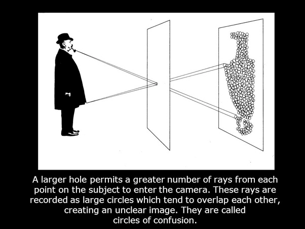
Pinhole cameras are always sharp at any length (gemeint ist: object to camera length). The problem is
that pinhole cameras have circles of confusion, which is the image is being projected from every point
light is passing through the aperture to every opposite point.
The larger the aperture, the more photons can come through, that means the brighter the image but
the less “sharp” the image is due to overlapping images. (dh larger aperture -> CoC wächst schneller -> smaller DoF (cf lecture))
The only way to get rid of circles of confusion is to use a lens which focuses light to a single point.
At which point there are not overlapping images.
- CoC Effekt #2: with lens (sensor out of area of AF)
https://de.wikipedia.org/wiki/Zerstreuungskreis
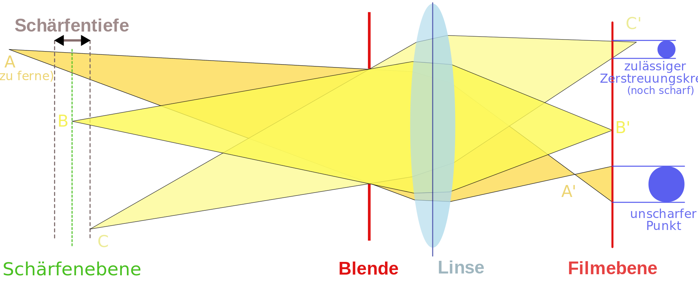
https://shotkit.com/circle-of-confusion/
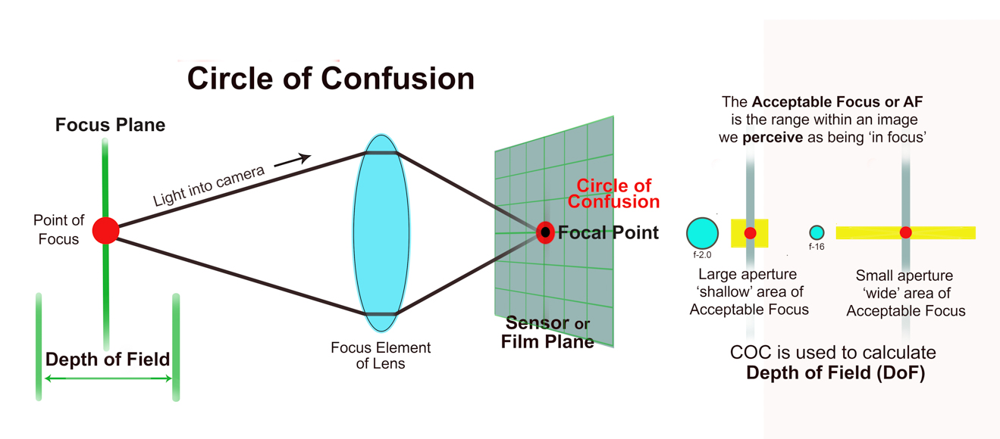
It’s also the case that an area in front and behind the focal plane extends the area of the subject that we perceive as being in focus. In the diagram, this is shown in yellow.
Looking side-on, you see that the yellow areas are different for a large aperture (hellblauer Kreis f-2.0) and for a small aperture (hellblauer Kreis f-16).
All the areas in red and yellow are seen by the human eye as being in focus, even though they aren’t perfectly so.
This is what photographers call the “Acceptable Focus” or the “Permissible Circle of Confusion”.
In simple terms, this is the area of an image that appears to be in focus.
__________________________________________________________________________________________
Depth of field
- lecture: large aperture -> small DoF (-> background not visible/blurry)
- this is why many photographers use additional light sources -> allows to use smaller apertures (larger DoF -> more focussed image)
------------------------------------------------------------------------------------
Definition: DoF
https://en.wikipedia.org/wiki/Depth_of_field
depth of field (DOF) is the distance between the nearest and the farthest objects that are in acceptably sharp focus in an image. (area außerhalb DoF wichtig für Bokeh s.u.)
The depth of field can be calculated based on focal length, distance to subject, the acceptable circle of confusion size, and aperture.
------------------------------------------------------------------------------------
DoF for Pinhole Camera:
(wieder von https://en.wikipedia.org/wiki/Pinhole_camera)
The depth of field is basically infinite, but this does not mean that no optical blurring occurs. The infinite depth
of field means that image blur depends not on object distance but on other factors, such as the distance from
the aperture to the film plane, the aperture size, the wavelength(s) of the light source, and motion of the subject
or canvas. Additionally, pinhole photography can not avoid the effects of haze (=atmospheric phenomenon in which
dust, smoke, and other dry particulates obscure the clarity of the sky).
__________________________________________________________________________________________
E: Bokeh:
(wiki)
- is the aesthetic quality of the blur produced in out-of-focus parts of an image.
- blur occurs in all regions of an image which are outside the depth of field.
- Differences in lens aberrations and aperture shape cause very different bokeh effects.
Bokeh characteristics may be quantified by examining the image's circle of confusion. In out-of-focus areas, each
point of light becomes an image of the aperture, generally a more or less round disc. Depending on how a lens is
corrected for spherical aberration, the disc may be uniformly illuminated, brighter near the edge, or brighter near the center.
Lenses that are poorly corrected for spherical aberration will show one kind of disc for out-of-focus points in front
of the plane of focus, and a different kind for points behind. This may actually be desirable, as blur circles that
are dimmer near the edges produce less-defined shapes which blend smoothly with the surrounding image.
The shape of the aperture has an influence on the subjective quality of bokeh as well. For conventional lens
designs (with bladed apertures), when a lens is stopped down smaller than its maximum aperture size
(minimum f-number), out-of-focus points are blurred into the polygonal shape formed by the aperture blades.
This is most apparent when a lens produces hard-edged bokeh. For this reason, some lenses have many
aperture blades and/or blades with curved edges to make the aperture more closely approximate a circle
rather than a polygon.
——————————————————————————————————————————————————
E: Thin lens approximation:
d << R1 und d << R2 (d: Linsendicke, R: Radii der Linse)
——————————————————————————————————————————————————
E: Gaussian Filter
from scipy.ndimage import gaussian_filter
a = np.arange(50, step=2).reshape((5,5))
a
array([[ 0, 2, 4, 6, 8],
[10, 12, 14, 16, 18],
[20, 22, 24, 26, 28],
[30, 32, 34, 36, 38],
[40, 42, 44, 46, 48]])
gaussian_filter(a, sigma=1)
array([[ 4, 6, 8, 9, 11],
[10, 12, 14, 15, 17],
[20, 22, 24, 25, 27],
[29, 31, 33, 34, 36],
[35, 37, 39, 40, 42]])
from scipy import misc
import matplotlib.pyplot as plt
fig = plt.figure()
plt.gray() # show the filtered result in grayscale
ax1 = fig.add_subplot(121) # left side
ax2 = fig.add_subplot(122) # right side
ascent = misc.ascent()
result = gaussian_filter(ascent, sigma=5)
ax1.imshow(ascent)
ax2.imshow(result)
plt.show()
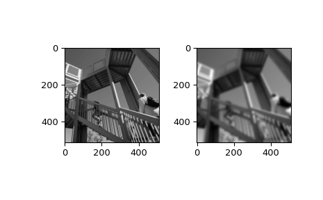
lec2
E: aliasing
- aliasing occurs when your sampling rate is not high enough to capture the amount of detail in your image
- can give you the wrong signal/image - an “alias”
FourierTrafo: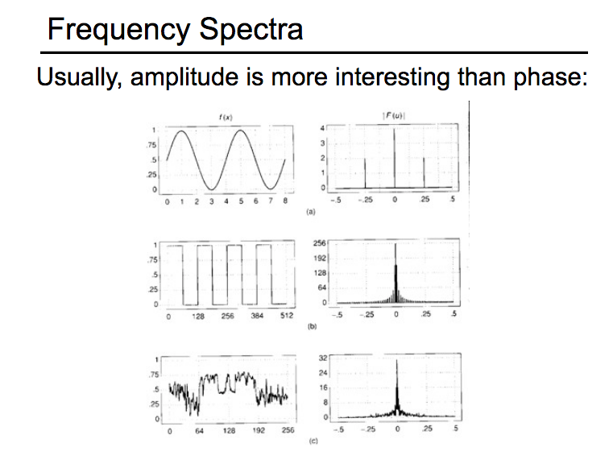
- When the sampled magnitude spectra do not overlap:
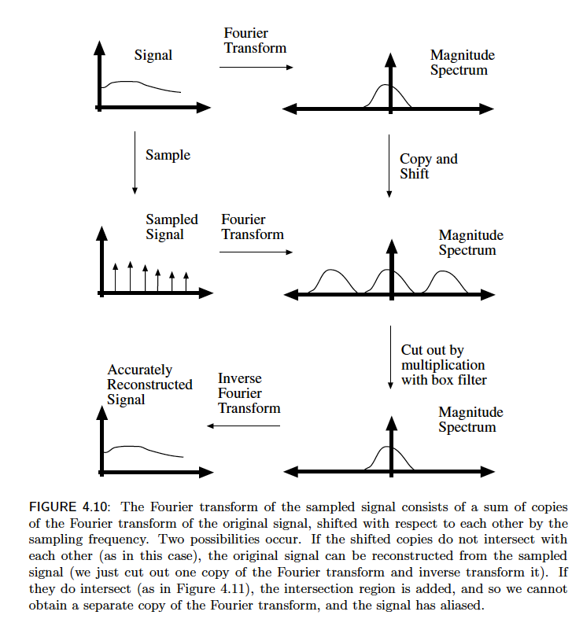
- When the sampled magnitude spectra do overlap:
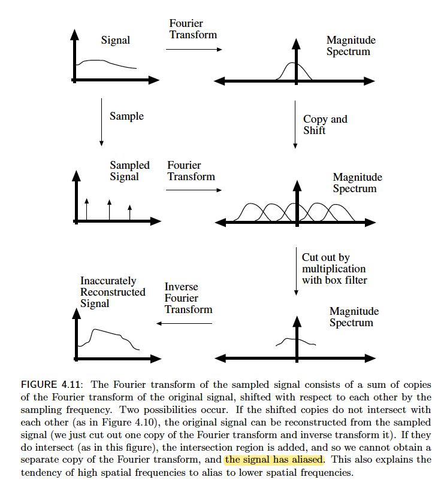
- Forsyth, Ponce: the Fourier transform of the sampled signal is the sum of a collection of shifted versions of the Fourier transforms of the signal, i.e.
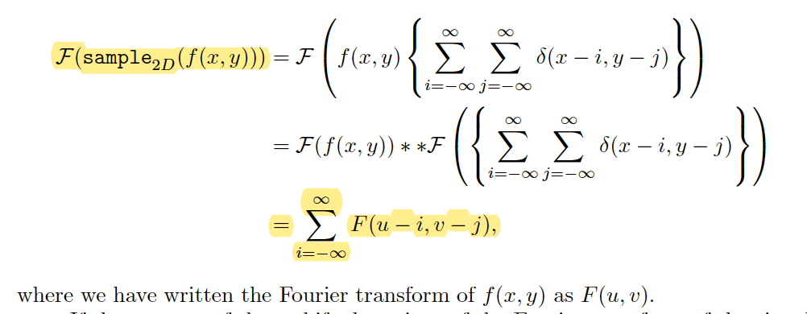
wobei f(x,y) das sampled signal und die { }-brackets die bed-of-nails function ist, die zum samplen benutzt wird; ** ist die convolution operation und varF ist die Fouriertrafo operation.
Part 3.1: Multi-Scale Representations
- in many CV tasks we need to perform a quick search across the space
- eg find occurrences of a particular house in an image with an object detector that looks for the house at a particular size in the image
- problem: at the original image resolution the detector window is too small and only covers part of the house
- sol: consider multiple downscaled versions of the original image => at some lower resolution the object detector will match the size of the house in the image => house will be detected
- General sol: Build up a so-called image pyramid
- original image at its base resolution at the starting level
- multiple downscaled versions on top
- process all those versions in parallel
- perform a range of CV tasks at different scales simultaneously
- Note: this does not need much more computational resources and memory space, if we use a constant downscaling factor of 2 in both directions (=image at next level only ¼ of the size of the original image => image pyramid contains not more than 1.5 times the number of pixels of the original image => image pyramid comes with very little overhead)
- checkerboard: in the bottom two cases the resampling rate is too low to preserve the checkerboard structure
lec3
E: 3.3 image gradients
- ganz unten auf der website ist ein 3x3 Filter in dem man selbst Werte eingeben kann mit dem live update Bild eines römischen Gebäudes daneben: hier 7 Werte gleich 0 setzen und 2 nebeneinanderliegende Werte (egal wo) auf 1 -1 (oder -1 1)
- dh. 1 -1 rechnet Gradienten “zwischen betrachtetem Pixel und Nachbarpixel” aus, statt (wie gewollt) “genau auf” dem betrachteten Pixel
- -> dadurch ist Ableitung (=gefiltertes Bild) ½ Pixel nach links verschoben
- denn der 1. berechnete Gradient (also der bei (0,0) im gefilterten Bild) ist tatsächlich ½ Pixel weiter rechts, dh. bei Pixel (0,0+1/2) statt bei (0,0)
- dh wir wollen den Gradienten auf index (i,j) und nicht auf (i,j+½)
- das geht nur mit 3x3 Filter, weil dieser ist immer auf einem Pixel zentriert (sowohl mit als auch ohne padding)
- als Klausurfrage ungeeignet
lec6 - Segmentation
The Gestalt School
- Elements in a collection can have properties that result from relationships
- “the whole is greater than the sum of its parts
- illusory/subjective contours (pacman triangle)
- occlusion (ein Teil vom “S” verdeckt)
- familiar configuration (morgenstern, Nessi snake)
Gestalt Theory
- Gestalt: whole or group ?
- whole is greater than sum of its parts
- relationships among parts can yield new properties/features
- psychologists (psychophysicists) identified series of factors that predispose set of elements to be grouped (by human visual system) eg. Max Wertheimer
Gestalt factors
- proximity
- similarity (Farbe: zB schwarze Punkte und weiße Punkte)
- similarity (Ausrichtung: zB hochkant Ellipsen und liegende Ellipsen)
- Common Fate (motion)
- Common Region
- parallelism
- symmetry
- continuity
- closure
- Gestalt factors are difficult to translate into algorithms
Continuity through Occlusion Cues
- continuity, explanation by occlusion (Würfel verdeckt mit 3 Stangen, fünf verdeckte “9”en, Hund)
Summary
- when we look at images, there is a lot of grouping going on in our human visual system. Those are not just based on local measurements/not just based on individual image pixel colors. Instead they are based on larger scale grouping effects, based on recognition of known structure, based on finding visual explanations for e.g. occlusion effects. Those all have influence on what we finally perceive in the scene.
Image Segmentation
Goal: identify groups of pixels that go together
lec7 - Segmentation as Energy Minimization
Sachen, die schwer zu merken sind:
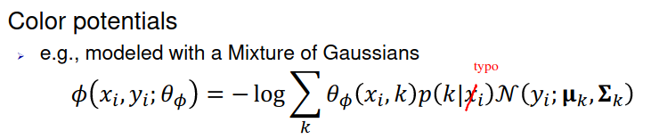
- the energy function is submodular, iff ...
- Leibe: “Briefly stated, this [“submodularity”] constraint has the effect that we prefer labeling pixels to be in the same class rather than in different classes.”
- Energiefunktion für 2 Pixel i und j E(Label_i, Label_j) hat die Eigenschaft, dass die Energie (=cost) niedriger ist, wenn beide Pixel das gleiche Label haben, ie Label_i = label_j, statt unterschiedliche Label. Da wir E minimieren wollen (wie Physik), ist letzteres äquivalent dazu, dass wir gleiche Label für die Pixel i und j bei der Segmentation (=Labelzuordnung) präferieren. Als Klausurfrage ungeeignet ! (lern erstmal den Rest/die Basics !)
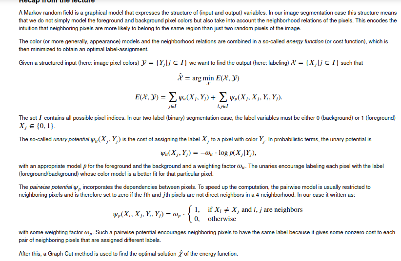
lec8 - Object detection
GrabCut
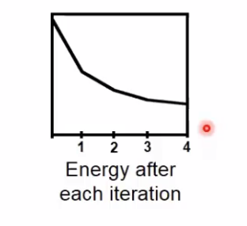
- GMM für foreground mit 5 Komponenten (s. 5 rote Ellipsen; sind egtl Ellipsoidoberflächen im RGB Raum, die Flächen bzw Konturen gleicher Ws darstellen, die auf RG Raum projiziert sind) und GMM für background mit weiteren 5 Komponenten (s. blaue Ellipsen) ändern sich nach jeder Iteration. Dieser Vorgang ist sozusagen eine “Meta-optimization” des color model, neben der egtl optimization der energy function.
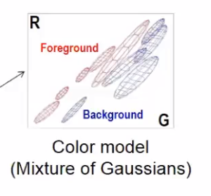
im Original-Paper:
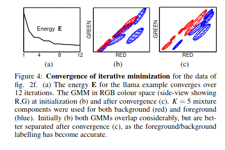
- Can we draw any parallels of MRF or CRF to context in semantic segmentation?
- Leibe: “The answer is yes, when you look at what we had before, we can set up per pixel classifiers, this corresponds to the unary potentials in MRFs or CRFs. What the MRF/CRF formalism gives us is the possibility to also integrate neighborhood constraints and this corresponds to context information. In a deep learning context with CNNs the CNN will take into account context information automatically through its processing chain. Therefore, it also can be understood as a form of classification or segmentation problem that takes into account context information. But here the MRF or CRF, basically, provides us with the opportunity to explicitly put in context, a type of context that we can control, where we know exactly what kind of assumptions we make about the context.”
Object detection
Challenges
- Leibe zu “Scale change”: Was er meint ist, dass das receptive field des Filters gleichzeitig maßgetreu angepasst werden muss, wenn man ein Bild verkleinert/vergrößert, sonst extracted der Filter andere Features (zB Edges, …)
Gradient-based Representations
- Localized histograms offer more spatial information than a single global histogram “tradeoff invariant vs discriminative” (folie 35 unter “Summarize local distribution of gradients with histograms”) soll heißen, dass
- von paper (vgl. nächste Vorlesung): The keypoint descriptor is shown on the right side of Figure 7. It allows for significant shift in gradient positions by creating orientation histograms over 4x4 sample regions. The figure shows eight directions for each orientation histogram, with the length of each arrow corresponding to the magnitude of that histogram entry. A gradient sample on the left can shift up to 4 sample positions while still contributing to the same histogram on the right, thereby achieving the objective of allowing for larger local positional shifts.
- aus Grauman Buch (3.3.1 THE SIFT DESCRIPTOR): Sampling is performed in a regular grid of 16×16 locations covering the interest region. For each sampled location, the gradient orientation is entered into a coarser 4×4 grid of gradient orientation histograms with 8 orientation bins each [...]. [...] This procedure is visualized for a smaller 2×2 grid in Figure 3.8. The motivation for this choice of representation is that the coarse spatial binning allows for small shifts due to registration errors without overly affecting the descriptor. At the same time, the high-dimensional representation provides enough discriminative power to reliably distinguish a large number of keypoints.
- zu tradeoff: in diesem Sinne [The motivation for this choice of representation is that the coarse spatial binning allows for small shifts due to registration errors without overly affecting the descriptor. At the same time, the high-dimensional representation provides enough discriminative power to reliably distinguish a large number of keypoints.] gibt es einen tradeoff zwischen invariant [ggü small shifts/rotations] und discriminative:
- discriminative ist hier das Gegenteil von invariant
- je discriminativer umso öfter sagt der classifier “das ist nicht das gleiche Bild”, auch wenn beide Bilder ähnlich sind !
- localized histograms (also 4 sub-histograms statt 1 globales) (also das “coarser 4×4 grid of gradient orientation histograms”) sind für beides gut, die spatial information UND die shift/rotation invariance gut.
- unwahrsch. als Klausurfrage !
lec9 - Object detection II
HOG detector
Descriptor representation
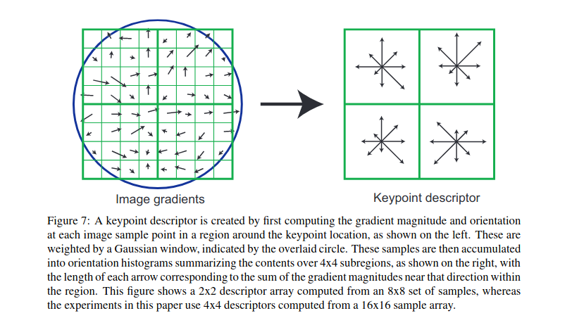
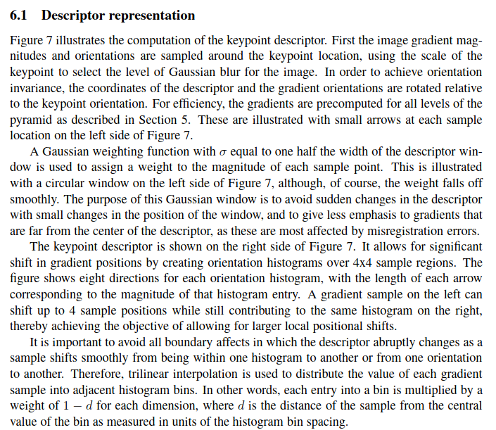
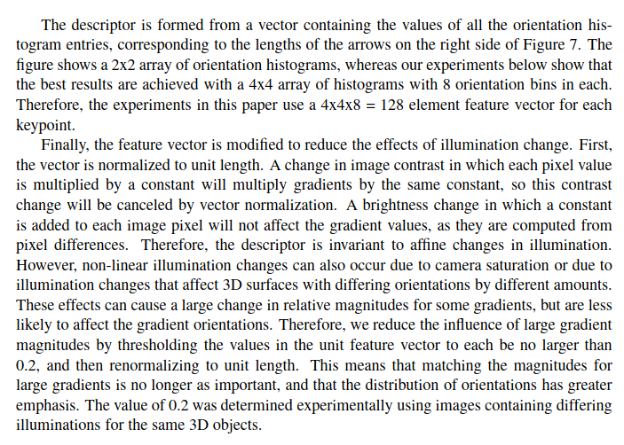
- zu “affine changes in illumination”:
- zu affine transformations:
- every affine transformation on X can be represented as the composition of a linear transformation on X and a translation of X. Unlike a purely linear transformation, an affine transformation need not preserve the origin of the affine space. Thus, every linear transformation is affine, but not every affine transformation is linear.
- Examples of affine transformations include translation, scaling, homothety, similarity, reflection, rotation, shear mapping, and compositions of them in any combination and sequence.
- Als Ähnlichkeitsabbildung (oder Ähnlichkeit) wird in der Geometrie, einem Teilgebiet der Mathematik, eine Affinität bezeichnet, die Streckenverhältnisse und Winkelgrößen unverändert lässt, aber im Allgemeinen die Längen von Strecken ändert.
- zu similarity: (Ähnlichkeit) In der Geometrie sind zwei Figuren genau dann zueinander ähnlich, wenn sie durch eine Ähnlichkeitsabbildung (auch diese Abbildung wird häufig als Ähnlichkeit bezeichnet) ineinander überführt werden können.
- zu L2-normalization: from Dalal paper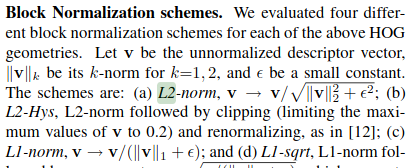
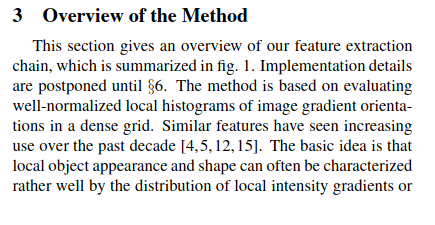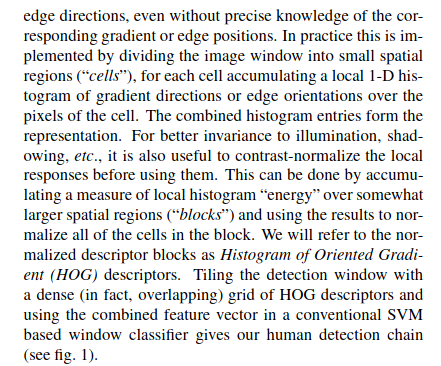
- “The detector window is tiled with a grid of overlapping blocks in which Histogram of Oriented Gradient feature vectors are extracted.”
- Figure 4 (d) Using overlapping descriptor blocks decreases the miss rate by around 5%.
- wichtiges im obigen Text:
- dieses “overlapping grid of HOG descriptor blocks” entsteht also bei der contrast-normalization (wie auf Leibe Folie steht) und verbessert die “miss rate”
Viola-Jones detector
- intuition: two-rectangle features can be used to measure the difference in intensity between the region of the eyes and a region across the upper cheeks (fig 3)
- paper: “For the task of face detection, the initial rectangle features selected by AdaBoost are meaningful and easily interpreted. The first feature selected seems to focus on the property that the region of the eyes is often darker than the region of the nose and cheeks (see Figure 3). This feature is relatively large in comparison with the detection subwindow, and should be somewhat insensitive to size and location of the face. The second feature selected relies on the property that the eyes are darker than the bridge of the nose.
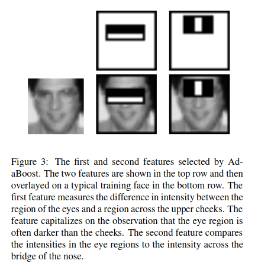
- haar basis function features = rectangle features (von paper):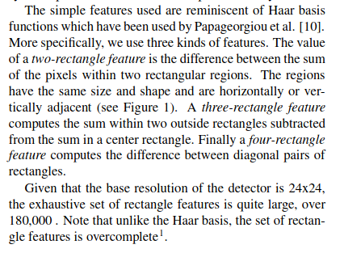
- “we use three kinds of features” - sie benutzen alle drei Varianten gleichzeitig ! (sie haben 3 versch. Varianten benutzt, aber das sind vlt tatsächlich mehr als 3 features, zB feature A und B in fig 1 gehören zu einer Variante, sind aber tatsächlich verschieden)
- in vio-jones implementation:
- 24x24 detection window
- pool of >180k rectangle features
- rectangle features: the value of a rectangle feature is the calculated difference (between the sum of the pixels in the white and grey regions) # s. text 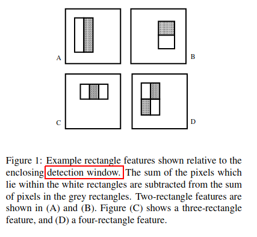
- integral image:
- Rectangle features can be computed very rapidly using an intermediate representation for the image which we call the integral image. The integral image at location (x, y) contains the sum of the pixels above and to the left of (x, y) [s Bild], inclusive:
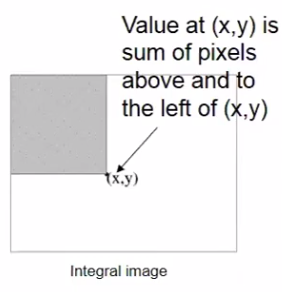
- “the integral image can be computed in one pass over the original image” (aus paper)
- rectangle calculation: 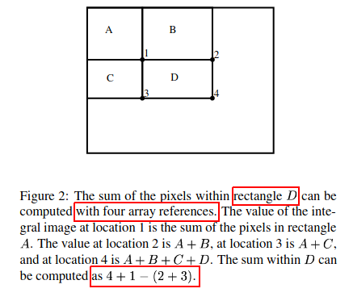
- independent of size: egal wie groß detection window D ist, die calculation ist gleich expensive => no downsampling needed anymore, scale features directly instead (which is equally expensive)
- computational complexity: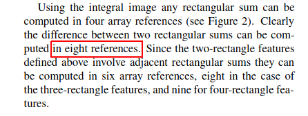
- six array references for “two-rectangle features”: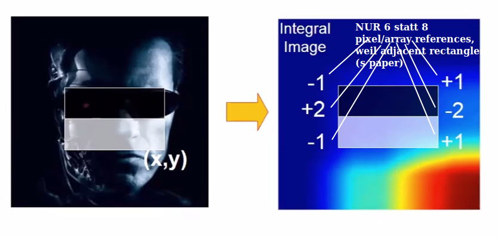
- Vorfaktor +2 und -2 weil die “borderpixel” 2 mal in die Differenz eingehen (einmal für weißes Rechteck und einmal für schwarzes)
- Leibe: “key idea of Viola-Jones detector is that we present the detector with a large library/pool of such features. Each feature is one configuration of those rectangles at a certain position and with a certain aspect ratio (wiki: the aspect ratio of an image is the ratio of its width to its height). we can vary the top left corner, we can vary the bottom right corner and we can vary the type of the feature (eg horizontal subdivision, vertical subdivision, three-rectangle feature, four-rectangle (diagonal) feature, etc)”
- Leibe: “we simply define different types of features and for each type we define a number of top left corner positions and bottom right corner positions and from those possibilities we span up a huge pool of possible feature configurations” (Achtung: Im folgenden Bild sind nur die 24x24 (sliding) detection windows - und in diesen die rectangle features - dargestellt und nicht die Bilder über die sie geschoben werden !)
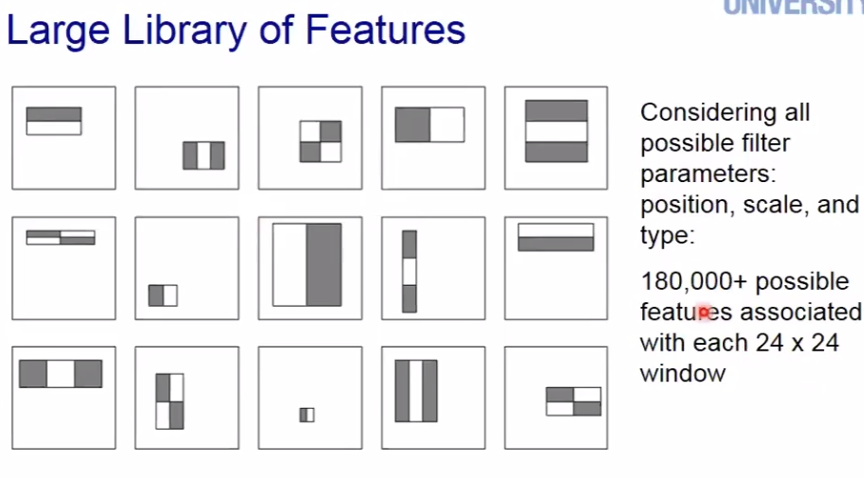
AdaBoost algo
- 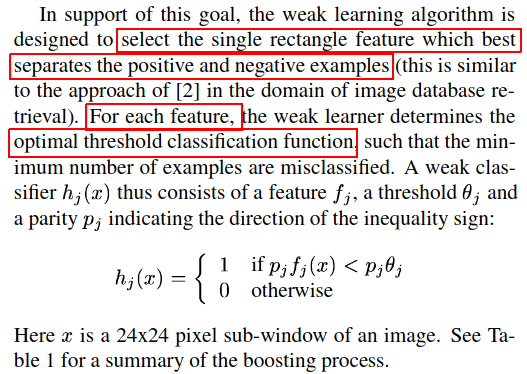
- “Table 1: The AdaBoost algorithm for classifier learning. Each round of boosting selects one feature from the 180,000 potential features.”
- What do the initially selected features of AdaBoost mean ?
- cascade of AdaBoost classifiers:
- in stage 1 im Grunde dasselbe wie ohne cascade, aber nur mit 2 (von AdaBoost gewählten) features => less expensive
- in stage 2 auch dasselbe wie ohne cascade, aber mit anderem - schwierigeren - training set (set mit klaren negatives ausgesiebt)
- Hyperparameter of the cascade:
- i) the number of classifier stages
- ii) the number of features in each stage
- iii) the threshold of each stage (ie. for face-no face decision; we want to detect almost all faces, s. hier)
- first stage: 2 rectangle features (s. fig 3), die von AdaBoost ausgewählt werden !
- “Given a feature set and a training set of positive and negative images, any number of machine learning approaches could be used to learn a classification function. In our system a variant of AdaBoost is used both to select a small set of features and train the classifier”
- diese beiden features werden mit dem sliding detection window über alle Bilder im training set geschoben
- Achtung: jedes einzelne der 180000+ rectangle features hat eine feste Position IM DETECTION WINDOW (vgl fig 1)
- Adaboost Classifier 1 wertet jeden dieser sliding windows aus (geht schnell, weil nur 2 rect features)
- positive sliding window (face) wird weiter von AdaBoost Classifier 2 ausgewertet, negatives (no face) werden rejected
- T: True face detections, F: False face detections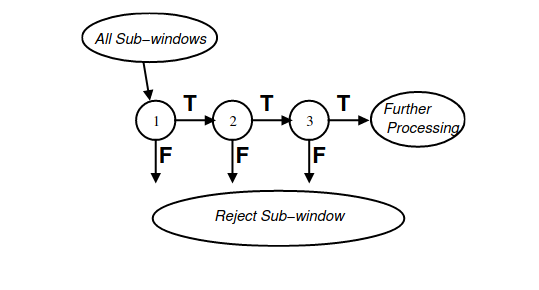
- adjust each AdaBoost classifier’s threshold such that almost all faces are detected (dh maximiere TPs und minimiere FNs), dh. FNR close to 0.
- TPR=recall=TP/(TP+FN) (dh Verhältnis TPs zu alle die “tatsächlich” positives sein sollten; denn FNs sollten ja “tatsächlich” positives sein!)
- Muster für die rates TPR, FPR, TNR, FNR: x/(N oder P)
- 1. was im Zähler steht, steht auch im Nenner
- 2. im Nenner entweder TP+FN oder TN+FP
- merke: es gibt also nur 2 mögliche Nenner (nämlich P=TP+FN und N=TN+FP)
- Cascades: A frequently used method for speeding up classifiers is to split them up into a sequence of simpler classifiers. By having the first stages prune most of the false positives (äquivalent zu “FNR close to 0”, weil wir lassen “almost all” positives durch, dh es gibt fast keine false positives mehr nach den ersten stages [=>wir “prunen” die false positives]), the average computation time is significantly reduced (aus paper)
lec13 - CNNs
Convolutional layers
Pooling Layers
Nonlinearities
- Question: What do ReLU layers accomplish?
- Answer: Piece-wise linear tiling: mapping is locally linear.
- Long Answer: ReLU layers do local linear approximation. Number of planes grows exponentially with number of hidden units. Multiple layers yield exponential savings in number of parameters (parameter sharing). (Montufar et al. “On the number of linear regions of DNNs” arXiv 2014, https://arxiv.org/pdf/1402.1869.pdf )
lec14 - ML Recap, Backbones
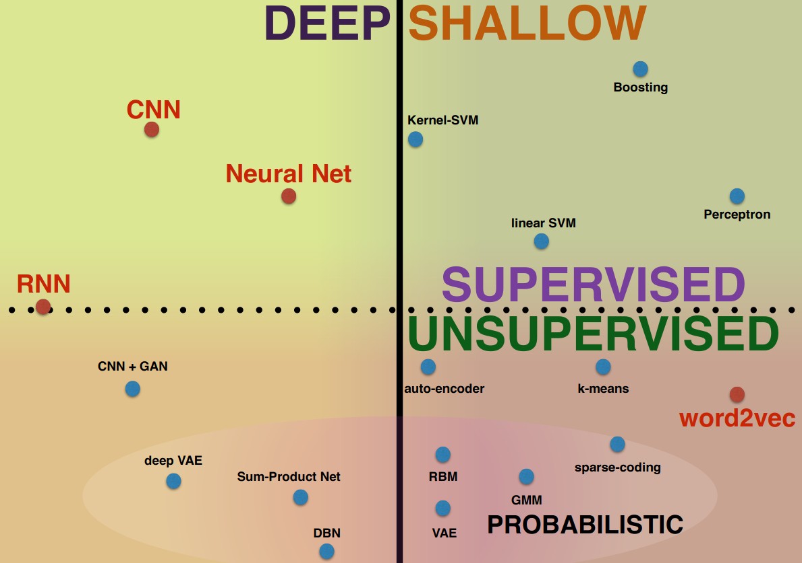
Stanford - Recap[1]
Recap: AlexNet, VGG, GoogleNet, ResNet, DenseNet, FractalNet
As a reminder, last time we were talking about CNN Architectures. We kind of walked through the timeline of some of the various winners of the Imagenet classification challenge:
- Kind of the breakthrough result, as we saw, was the AlexNet architecture in 2012, which was a nine layer convolutional network. It did amazingly well, and it sort of kick started this whole deep learning revolution in computer vision, and kind of brought a lot of these models into the mainstream.
- Then we skipped ahead a couple years, and saw that in 2014 image net challenge, we had these two really interesting models, VGG and GoogLeNet, which were much deeper.
- So VGG was, they had a 16 and a 19 layer model, and GoogLeNet was, I believe, a 22 layer model.
- Although one thing that is kind of interesting about these models is that the 2014 image net challenge was right before batch normalization was invented. So at this time, before the invention of batch normalization, training these relatively deep models of roughly twenty layers was very challenging. So, in fact, both of these two models had to resort to a little bit of hackery in order to get their deep models to converge:
- So for VGG, they had the 16 and 19 layer models, but actually they first trained an 11 layer model, because that was what they could get to converge. And then added some extra random layers in the middle and then continued training, actually training the 16 and 19 layer models. So, managing this training process was very challenging in 2014 before the invention of batch normalization.
- Similarly, for GoogLeNet, we saw that GoogLeNet has these auxiliary classifiers that were stuck into lower layers of the network.
- And these were not really needed for the class to, to get good classification performance.
- This was just sort of a way to cause extra gradient to be injected directly into the lower layers of the network.
- And this sort of, this again was before the invention of batch normalization and now once you have these networks with batch normalization, then you no longer need these slightly ugly hacks in order to get these deeper models to converge.
- Then we also saw in the 2015 image net challenge was this really cool model called ResNet, these residual networks that now have these shortcut connections that actually have these little residual blocks where we're going to take our input, pass it through the residual blocks, and then add our input to the block to the output from these convolutional layers. This is kind of a funny architecture, but it actually has two really nice properties:
- One is that if we just set all the weights in this residual block to zero, then this block is computing the identity. So in some way, it's relatively easy for this model to learn not to use the layers that it doesn't need. In addition, it kind of adds this interpretation to L2 regularization in the context of these neural networks, cause once you put L2 regularization, remember, on the weights of your network, that's going to drive all the parameters towards zero.
- If your standard convolutional architecture [ie an architecture w/o skip connections] is driving towards zero, it [a layer with weights=0] doesn't make sense.
- But in the context of a residual network, if you drive all the parameters towards zero, that's kind of encouraging the model to not use layers that it doesn't need, because it will just drive those, the residual blocks towards the identity, whether or not needed for classification.
- The other really useful property of these residual networks has to do with the gradient flow in the backward paths. If you remember what happens at these addition gates in the backward pass, when upstream gradient is coming in through an addition gate, then it will split and fork along these two different paths. So then, when upstream gradient comes in, it'll take one path through these convolutional blocks, but it will also have a direct connection of the gradient through this residual connection. So then when you look at, when you imagine stacking many of these residual blocks on top of each other, and our network ends up with hundreds of, potentially hundreds of layers. Then, these residual connections give a sort of gradient super highway for gradients to flow backward through the entire network. And this allows it to train much easier and much faster. And actually allows these things to converge reasonably well, even when the model is potentially hundreds of layers deep.
- And this idea of managing gradient flow in your models is actually super important everywhere in machine learning. And super prevalent in recurrent networks as well. So we'll definitely revisit this idea of gradient flow later in today's lecture.
- So then, we kind of also saw a couple other more exotic, more recent CNN architectures last time, including DenseNet and FractalNet, and once you think about these architectures in terms of gradient flow, they make a little bit more sense. These things like DenseNet and FractalNet are adding these additional shortcut or identity connections inside the model. And if you think about what happens in the backwards pass for these models, these additional funny topologies are basically providing direct paths for gradients to flow from the loss at the end of the network more easily into all the different layers of the network.
- So I think that, again, this idea of managing gradient flow properly in your CNN Architectures is something that we've really seen a lot more in the last couple of years. And will probably see more moving forward as more exotic architectures are invented.
Recap: plot: flops vs #params vs runtime
We also saw this kind of nice plot, plotting performance of the number of flops versus the number of parameters versus the run time of these various models. And there's some interesting characteristics that you can dive in and see from this plot:
- One idea is that VGG and AlexNet have a huge number of parameters, and these parameters actually come almost entirely from the fully connected layers of the models.
- So AlexNet has something like roughly 62 million parameters, and if you look at that last fully connected layer, the final fully connected layer in AlexNet is going from an activation volume of six by six by 256 into this fully connected vector of 496.
- So if you imagine what the weight matrix needs to look like at that layer, the weight matrix is gigantic. It's number of entries is six by six, six times six times 256 times 496. And if you multiply that out, you see that that single layer has 38 million parameters.
- So more than half of the parameters of the entire AlexNet model are just sitting in that last fully connected layer.
- And if you add up all the parameters in just the fully connected layers of AlexNet, including these other fully connected layers, you see something like 59 of the 62 million parameters in AlexNet are sitting in these fully connected layers.
- So then when we move to other architectures, like GoogLeNet and ResNet, they do away with a lot of these large fully connected layers in favor of global average pooling at the end of the network. And this allows these nicer architectures, to really cut down the parameter count in these architectures.
[ST] Classification + Localization
- ab 32:44 (Lecture 11 | Detection and Segmentation)
- So the next task that I want to talk about is this idea of classification plus localization.
- So we've talked about image classification a lot where we want to just assign a category label to the input image but sometimes you might want to know a little bit more about the image.
- In addition to predicting what the category is, in this case the cat, you might also want to know where is that object in the image?
- So in addition to predicting the category label cat, you might also want to draw a bounding box around the region of the cat in that image.
C&L vs Object detection
- And classification plus localization, the distinction here between this and object detection is that in the localization scenario you assume ahead of time that you know there's exactly one object in the image that you're looking for or maybe more than one but you know ahead of time that we're going to make some classification decision about this image and we're going to produce exactly one bounding box that's going to tell us where that object is located in the image so we sometimes call that task classification plus localization.
Basic architecture
- And again, we can reuse a lot of the same machinery that we've already learned from image classification in order to tackle this problem.
- So kind of a basic architecture for this problem looks something like this:
- So again, we have our input image, we feed our input image through some giant convolutional network, this is Alex, this is AlexNet for example, which will give us some final vector summarizing the content of the image.
- [2 fully connected layers:]
- Then just like before we'll have some fully connected layer that goes from that final vector to our class scores.
- But now we'll also have another fully connected layer that goes from that vector to four numbers. Where the four numbers are something like the height, the width, and the x and y positions of that bounding box.
- And now our network will produce these two different outputs,
- one is this set of class scores, and
- the other are these four numbers giving the coordinates of the bounding box in the input image.
- And now during training time, when we train this network we'll actually have two losses so in this scenario we're sort of assuming a fully supervised setting so we assume that each of our training images is annotated with both a category label and also a ground truth bounding box for that category in the image.
- So now we have two loss functions.
- We have our favorite softmax loss that we compute using the ground truth category label and the predicted class scores, and
- we also have some kind of loss that gives us some measure of dissimilarity between our predicted coordinates for the bounding box and our actual coordinates for the bounding box. So one very simple thing is to just take an L2 loss between those two and that's kind of the simplest thing that you'll see in practice although sometimes people play around with this and maybe use L1 or smooth L1 or they parametrize the bounding box a little bit differently but the idea is always the same, that you have some regression loss between your predicted bounding box coordinates and the ground truth bounding box coordinates.
- Is this a good idea to do all at the same time? Like what happens if you misclassify, should you even look at the box coordinates?
- So sometimes people get fancy with it, so in general it works okay. It's not a big problem, you can actually train a network to do both of these things at the same time and it'll figure it out
- but sometimes things can get tricky in terms of misclassification.
- So, sometimes what you'll see for example is that rather than predicting a single box you might
- make a separate prediction of the box for each category and
- then only apply loss to the predicted box corresponding to the ground truth category.
- So people do get a little bit fancy with these things that sometimes helps a bit in practice. But at least this basic setup, it might not be perfect or it might not be optimal but it will work and it will do something.
- Do these losses have different units, do they dominate the gradient?
- So this is what we call a multi-task loss so whenever we're taking derivatives we always want to take derivative of a scalar with respect to our network parameters and use that derivative to take gradient steps. But now we've got two scalars that we want to both minimize so what you tend to do in practice is have some additional hyperparameter that gives you some weighting between these two losses so you'll take a weighted sum of these two different loss functions to give our final scalar loss. And then you'll take your gradients with respect to this weighted sum of the two losses. And this ends up being really really tricky because this weighting parameter is a hyperparameter that you need to set but it's kind of different from some of the other hyperparameters that we've seen so far in the past right because this weighting hyperparameter actually changes the value of the loss function. So, one thing that you might often look at when you're trying to set hyperparameters is you might make different hyperparameter choices and see what happens to the loss under different choices of hyperparameters. But in this case because the loss actually, because the hyperparameter affects the absolute value of the loss making those comparisons becomes kind of tricky. So setting that hyperparameter is somewhat difficult. And in practice, you kind of need to take it on a case by case basis for exactly the problem you're solving but my general strategy for this is to have some other metric of performance that you care about other than the actual loss value which then you actually use that final performance metric to make your cross validation choices rather than looking at the value of the loss to make those choices.
- Why do we do this all at once? Why not do this separately? Why don't we fix the big network and then just only learn separate fully connected layers for these two tasks?
- People do do that sometimes and in fact that's probably the first thing you should try if you're faced with a situation like this but in general whenever you're doing transfer learning you always get better performance if you fine tune the whole system jointly because there's probably some mismatch between the features, if you train on ImageNet and then you use that network for your data set you're going to get better performance on your data set if you can also change the network. But one trick you might see in practice sometimes is that you might freeze that network then train those two things separately until convergence and then after they converge then you go back and jointly fine tune the whole system. So that's a trick that sometimes people do in practice in that situation. And as I've kind of alluded to this big network is often a pre-trained network that is taken from ImageNet for example.
Human Pose estimation
- So a bit of an aside, this idea of predicting some fixed number of positions in the image can be applied to a lot of different problems beyond just classification plus localization (vgl. Stichpunkt). One kind of cool example is human pose estimation.
- So here we want to take an input image is a picture of a person. We want to output the positions of the joints for that person and this actually allows the network to predict what is the pose of the human.
- Where are his arms, where are his legs, stuff like that, and generally most people have the same number of joints. That's a bit of a simplifying assumption, it might not always be true but it works for the network.
- So for example one parameterization that you might see in some data sets is define a person's pose by 14 joint positions. Their feet and their knees and their hips and something like that
- and now when we train the network then we're going to input this image of a person and now we're going to output 14 numbers in this case giving the x and y coordinates for each of those 14 joints.
- And then you apply some kind of regression loss on each of those 14 different predicted points and just train this network with back propagation again.
- Yeah, so you might see an L2 loss but people play around with other regression losses here as well.
- What do I mean when I say regression loss?
- So I mean something other than cross entropy or softmax right. When I say regression loss I usually mean like an L2 Euclidean loss or an L1 loss or sometimes a smooth L1 loss.
- But in general classification versus regression is whether your output is categorical or continuous
- so if you're expecting a categorical output like you ultimately want to make a classification decision over some fixed number of categories then you'll think about a cross entropy loss, softmax loss or these SVM margin type losses that we talked about already in the class.
- But if your expected output is to be some continuous value, in this case the position of these points, then your output is continuous so you tend to use different types of losses in those situations. Typically an L2, L1, different kinds of things there. So sorry for not clarifying that earlier.
- But the bigger point here is that for any time you know that you want to make some fixed number of outputs from your network, (if you know for example. Maybe you knew that you always are going to have pictures of a cat and a dog and you want to predict both the bounding box of the cat and the bounding box of the dog in that case you'd know that you have a fixed number of outputs for each input so) you might imagine hooking up this type of regression classification plus localization framework for that problem as well.
[ST] Object detection
- The idea in object detection is that we again start with some fixed set of categories that we care about, maybe cats and dogs and fish or whatever but some fixed set of categories that we're interested in. And now our task is that given our input image, every time one of those categories appears in the image, we want to draw a box around it and we want to predict the category of that box
- so this is different from classification plus localization because there might be a varying number of outputs for every input image. You don't know ahead of time how many objects you expect to find in each image so that's, this ends up being a pretty challenging problem.
- So we've seen graphs, so this is kind of interesting. We've seen this graph many times of the ImageNet classification performance as a function of years and we saw that it just got better and better every year and there's been a similar trend with object detection because object detection has again been one of these core problems in computer vision that people have cared about for a very long time.
- So this slide is due to Ross Girshick who's worked on this problem a lot and it shows the progression of object detection performance on this one particular data set called PASCAL VOC which has been relatively used for a long time in the object detection community.
- And you can see that up until about 2012 performance on object detection started to stagnate and slow down a little bit and then in 2013 was when some of the first deep learning approaches to object detection came around and you could see that performance just shot up very quickly getting better and better year over year.
- One thing you might notice is that this plot ends in 2015 and it's actually continued to go up since then so the current state of the art in this data set is well over 80 and in fact a lot of recent papers don't even report results on this data set anymore because it's considered too easy. So it's a little bit hard to know, I'm not actually sure what is the state of the art number on this data set but it's off the top of this plot.
- Okay, so as I already said this is different from localization because there might be differing numbers of objects for each image.
- So for example in this cat on the upper left there's only one object so we only need to predict four numbers but now for this image in the middle there's three animals there so we need our network to predict 12 numbers, four coordinates for each bounding box. Or in this example of many many ducks then you want your network to predict a whole bunch of numbers. Again, four numbers for each duck.
- So as a result [of Stichpunkt], it's kind of tricky if you want to think of object detection as a regression problem. So instead, people tend to work, use kind of a different paradigm when thinking about object detection.
- So one approach that's very common and has been used for a long time in computer vision is this idea of sliding window approaches to object detection. So this is kind of similar to this idea of taking small patches and applying that for semantic segmentation and we can apply a similar idea for object detection.
- So the idea is that we'll
- take different crops from the input image, in this case we've got this crop in the lower left hand corner of our image and now we take that crop,
- feed it through our convolutional network and our convolutional network does a classification decision on that input crop.
- It'll say that there's no dog here, there's no cat here, and then in addition to the categories that we care about we'll add an additional category called background and now our network can predict background in case it doesn't see any of the categories that we care about,
- [Problem:] so then when we take this crop from the lower left hand corner here then our network would hopefully predict background and say that no, there's no object here. Now if we take a different crop then our network would predict dog yes, cat no, background no. We take a different crop we get dog yes, cat no, background no. Or a different crop, dog no, cat yes, background no. Does anyone see a problem here? Yeah, the question is how do you choose the crops? So this is a huge problem right.
- any number of objects in this image,
- these objects could appear at any location in the image,
- these objects could appear at any size in the image,
- these objects could also appear at any aspect ratio in the image,
- so if you want to do kind of a brute force sliding window approach you'd end up having to test thousands, tens of thousands, many many many many different crops in order to tackle this problem with a brute force sliding window approach. And in the case where every one of those crops is going to be fed through a giant convolutional network, this would be completely computationally intractable.
- So in practice people don't ever do this sort of brute force sliding window approach for object detection using convolutional networks.
[ST] Region-based methods for object detection
R-CNN
- Instead there's this cool line of work called region proposals that comes from, this is not using deep learning typically.
- These are slightly more traditional computer vision techniques but the idea is that a region proposal network kind of uses more traditional signal processing, image processing type things to make some list of proposals
- given an input image, a region proposal network will then give you something like a thousand boxes where an object might be present. We look for edges in the image and try to draw boxes that contain closed edges or something like that. These are various types of image processing approaches, but these region proposal networks will basically look for blobby regions in our input image and then give us some set of candidate proposal regions where objects might be potentially found.
- And these are relatively fast-ish to run so
- one common example of a region proposal method: that you might see is something called Selective Search which I think actually gives you 2000 region proposals, not the 1000 that it says on the slide. So you kind of run this thing and then after about two seconds of turning on your CPU it'll spit out 2000 region proposals in the input image where objects are likely to be found
- so there'll be a lot of noise in those. Most of them will not be true objects but there's a pretty high recall. If there is an object in the image then it does tend to get covered by these region proposals from Selective Search.
- So now rather than applying our classification network to every possible location and scale in the image instead what we can do is first apply one of these region proposal networks to get some set of proposal regions where objects are likely located and now apply a convolutional network for classification to each of these proposal regions and this will end up being much more computationally tractable than trying to do all possible locations and scales.
- And this idea all came together in this paper called R-CNN from a few years ago that does exactly that.
- So given our input image in this case we'll run some region proposal network to get our proposals, these are also sometimes called regions of interest or ROI's so again Selective Search gives you something like 2000 regions of interest.
- Now one of the problems here is that these input, these regions in the input image could have different sizes but if we're going to run them all through a convolutional network our classification, our convolutional networks for classification all want images of the same input size typically due to the fully connected net layers and whatnot so we need to take each of these region proposals and warp them to that fixed square size that is expected as input to our downstream network. So we'll crop out those regions corresponding to the region proposals, we'll warp them to that fixed size
- run each of them through a convolutional network which will then
- use in this case an SVM to make a classification decision for each of those, to predict categories for each of those crops.
- And then in addition R-CNN also predicts a regression, like a correction to the bounding box in addition for each of these input region proposals because the problem is that your input region proposals are kind of generally in the right position for an object but they might not be perfect so in addition R-CNN will, in addition to category labels for each of these proposals, it'll also predict four numbers that are kind of an offset or a correction to the box that was predicted at the region proposal stage. So then again, this is a multi-task loss and you would train this whole thing.
- questions:
- How much does the change in aspect ratio impact accuracy?
- It's a little bit hard to say. I think there's some controlled experiments in some of these papers but I'm not sure I can give a generic answer to that.
- Is it necessary for regions of interest to be rectangles?
- So they typically are because it's tough to warp these non-region things but once you move to something like instant segmentation then you sometimes get proposals that are not rectangles. If you actually do care about predicting things that are not rectangles.
- Are the region proposals learned?
- so in R-CNN it's a traditional thing. These are not learned, this is kind of some fixed algorithm that someone wrote down but we'll see in a couple minutes that we can actually, we've changed that a little bit in the last couple of years.
- Is the offset always inside the region of interest?
- The answer is no, it doesn't have to be. You might imagine that suppose the region of interest put a box around a person but missed the head then you could imagine the network inferring that oh this is a person but people usually have heads so the network showed the box should be a little bit higher. So sometimes the final predicted boxes will be outside the region of interest.
- What is the output of the SVM, if there is no object in the ROI?
- You have a lot of ROI's that don't correspond to true objects. And like we said, in addition to the classes that you actually care about you add an additional background class so your class scores can also predict background to say that there was no object here.
- What kind of data do we need?
- This is fully supervised in the sense that our training data has each image, consists of images. Each image has all the object categories marked with bounding boxes for each instance of that category. There are definitely papers that try to approach this like oh what if you don't have the data. What if you only have that data for some images? Or what if that data is noisy but at least in the generic case you assume full supervision of all objects in the images at training time.
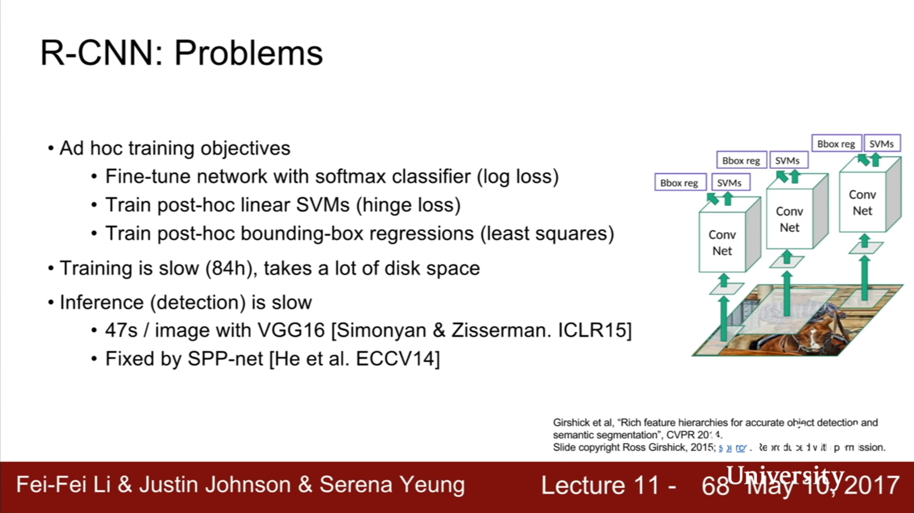
- Okay, so I think we've kind of alluded to this but there's kind of a lot of problems with this R-CNN framework.
- this is kind of still computationally pretty expensive because if we've got 2000 region proposals, we're running each of those proposals independently [through the CNN] [note: use the same CNN for all ROIs in the input image [unterschiedliche CNN für jeden ROI macht keinen Sinn, da alle ROIs unterschiedliche Pos und Form haben]], that can be pretty expensive.
- [ expensive weil wir jeden ROI einzeln durch das CNN schicken und nicht weil wir viele CNNs haben! ]
- Runtime 𝛂 Number of [expensive] forward and backward passes 𝛂 #ROIs * #input_images
- There's also this question of relying on this fixed region proposals, we're not learning them so that's kind of a problem.
- [At training time:] And just in practice it ends up being pretty slow so in the original implementation R-CNN would actually dump all the features to disk so it'd take hundreds of gigabytes of disk space[2] to store all these features. [nachdem ROI durch das CNN durch ist, wird das Ergebnis dieser “input_image x Matrix x … x Matrix”-multiplikation gespeichert für alle ROIs. Diese Ergebnisse werden dann nämlich benutzt, um die post-hoc[3] SVMs[4] zu trainieren (s. “cached region features” auf slide)! ] Then training would be super slow since you have to make all these different forward and backward passes through the image and it took something like 84 hours is one number they've recorded for training time so this is super super slow. 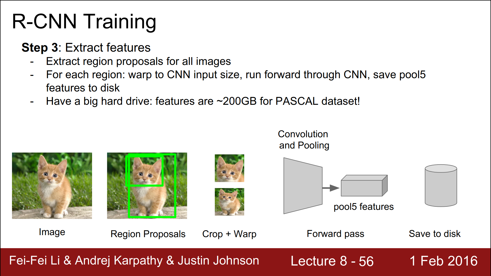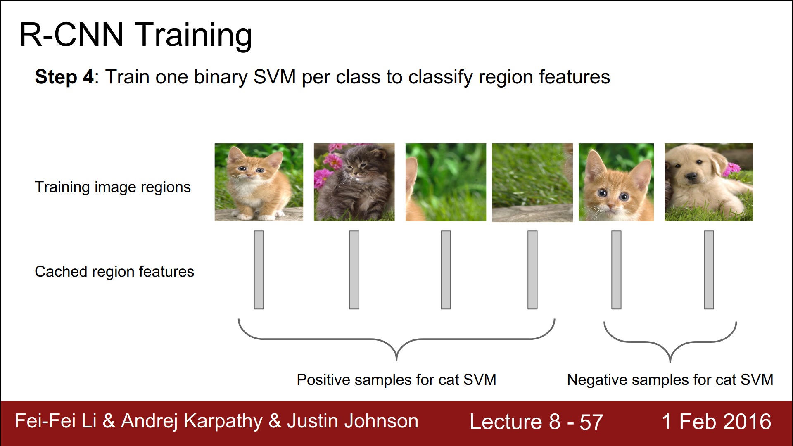[5]
Die positive/negative Einteilung sieht beim dog SVM natürlich anders aus: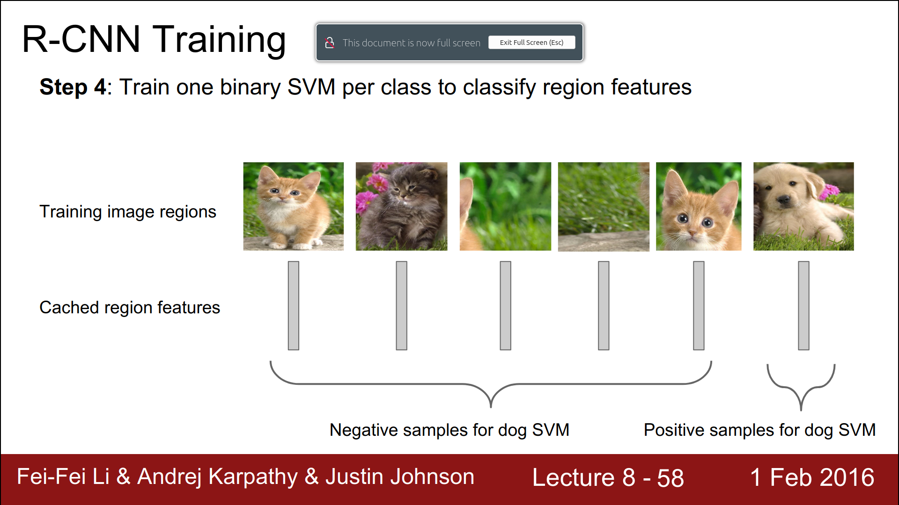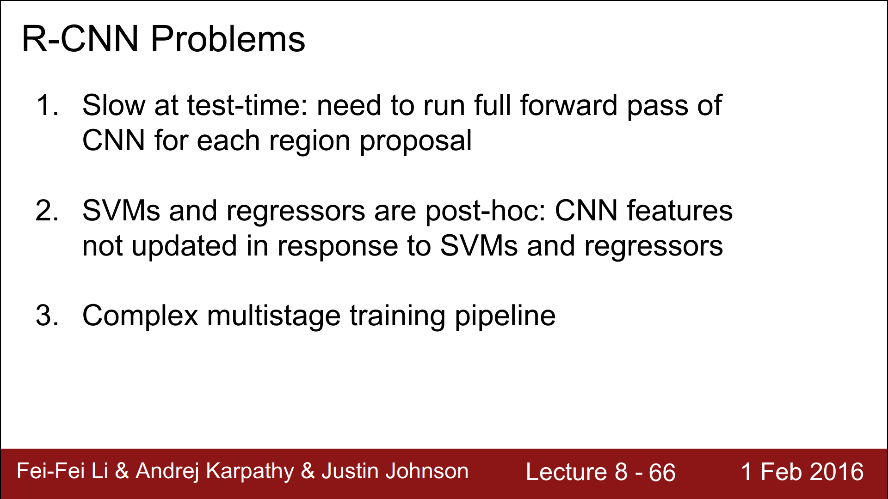
- And now at test time [“inference” time] it's also super slow, something like roughly 30 seconds per image because you need to run thousands [2000 in der original implementation] of forward passes through the convolutional network for each of these region proposals so this ends up being pretty slow.
Fast R-CNN
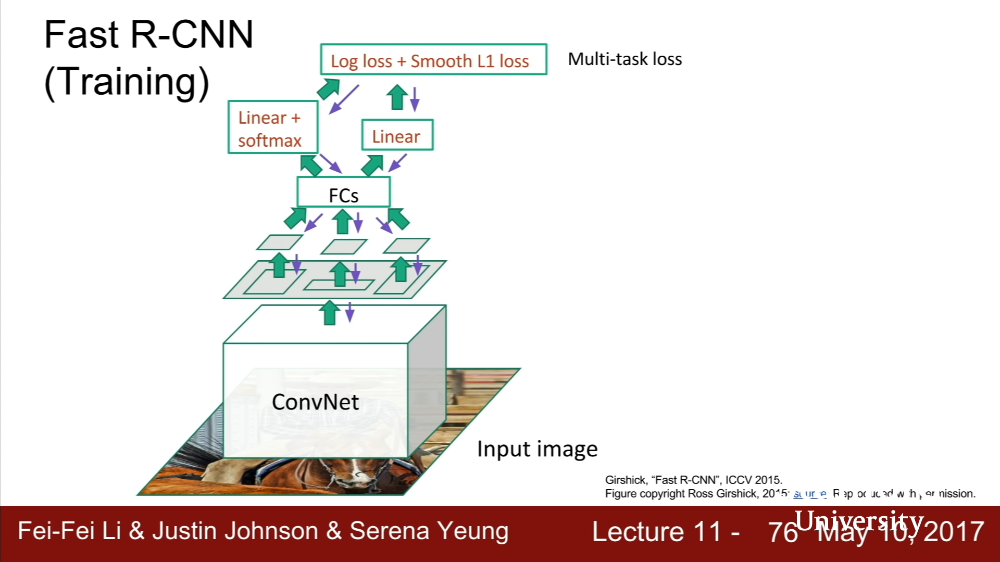 
- Thankfully we have fast R-CNN that fixed a lot of these problems so when we do fast R-CNN then it's going to look kind of the same.
- We're going to start with our input image but now rather than processing each region of interest separately instead we're going to run the entire image through some convolutional layers all at once to give this high resolution convolutional feature map corresponding to the entire image.
- And now we still are using some region proposals from some fixed thing like Selective Search but rather than cropping out the pixels of the image corresponding to the region proposals, instead we imagine projecting those region proposals onto this convolutional feature map and then taking crops from the convolutional feature map corresponding to each proposal rather than taking crops directly from the image.
- And this allows us to reuse a lot of this expensive convolutional computation across the entire image when we have many many crops per image.
- But again, if we have some fully connected layers downstream those fully connected layers are expecting some fixed-size input [a.k.a. low-resolution input] so now we need to do some reshaping of those crops from the convolutional feature map and they do that in a differentiable way using something they call an ROI pooling layer[6]. (This ROI pooling, it looks kind of like max pooling. I don't really want to get into the details of that right now.)
- Once you have these warped crops from the convolutional feature map then you can run these things through some fully connected layers and predict your classification scores and your linear regression offsets to the bounding boxes.
- And now when we train this thing then we again have a multi-task loss that trades off between these two constraints and during back propagation we can back prop through this entire thing and learn it all jointly[7].
- And in terms of speed if we look at R-CNN versus fast R-CNN versus this other model called SPP net which is kind of in between the two,
- then you can see that at training time fast R-CNN is something like 10 times faster to train because we're sharing all this computation between different feature maps.
- And now at test time fast R-CNN is super fast and in fact fast R-CNN is so fast at test time that its computation time is actually dominated by computing region proposals.
- So we said that computing these 2000 region proposals using Selective Search takes something like two seconds and now once we've got all these region proposals then because we're processing them [the region proposals] all sort of in a shared way by sharing these expensive convolutions across the entire image that we can process all of these region proposals in less than a second altogether.
- Problem: So fast R-CNN ends up being bottlenecked by just the computing of these region proposals.
Faster R-CNN
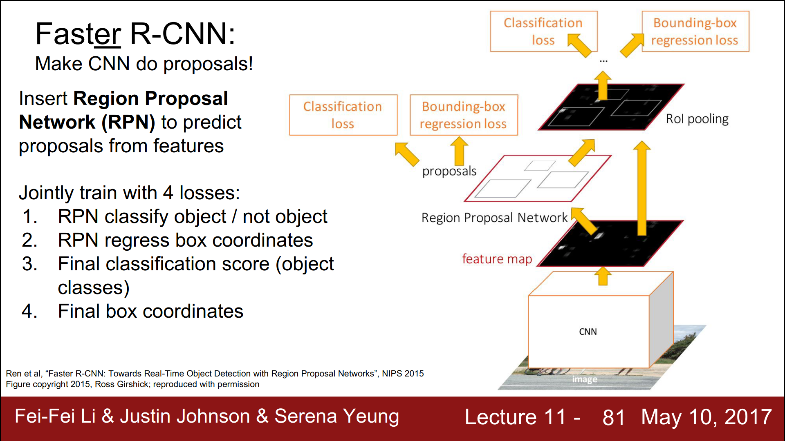
- Thankfully we've solved this problem with faster R-CNN.
- So the idea in faster R-CNN is to just make, so the problem was the computing the region proposals using this fixed function was a bottleneck. So instead we'll just make the network itself predict its own region proposals.
- And so the way that this sort of works is that again, we take our input image, run the entire input image altogether through some convolutional layers to get some convolutional feature map representing the entire high resolution image and now there's a separate region proposal network (RPN) which works on top of those convolutional features and predicts its own region proposals inside the network.
- Now once we have those predicted region proposals then it looks just like fast R-CNN where now we take crops from those region proposals from the convolutional features, pass them up to the rest of the network.
- And now we talked about multi-task losses and multi-task training networks to do multiple things at once. Well now we're telling the network to do four things all at once so balancing out this four-way multi-task loss is kind of tricky.
- But because the region proposal network needs to do two things:
- it needs to say for each potential proposal is it an object or not an object,
- it needs to actually regress the bounding box coordinates for each of those proposals,
- and now the final network at the end needs to do these two things again.
- Make final classification decisions for what are the class scores for each of these proposals,
- and also have a second round of bounding box regression to again correct any errors that may have come from the region proposal stage.
- So the question is that sometimes multi-task learning might be seen as regularization and are we getting that effect here?
- I'm not sure if there's been super controlled studies on that but actually in the original version of the faster R-CNN paper they did a little bit of experimentation like what if we share the region proposal network, what if we don't share? What if we learn separate convolutional networks for the region proposal network versus the classification network? And I think there were minor differences but it wasn't a dramatic difference either way. So in practice it's kind of nicer to only learn one because it's computationally cheaper.
- How do you train this region proposal network because you don't have ground truth region proposals for the region proposal network?
- So that's a little bit hairy. I don't want to get too much into those details but the idea is that at any time you have a region proposal which has more than some threshold of overlap with any of the ground truth objects then you say that that is the positive region proposal and you should predict that as the region proposal and any potential proposal which has very low overlap with any ground truth objects should be predicted as a negative. But there's a lot of dark magic hyperparameters in that process and that's a little bit hairy.
- What is the classification loss on the region proposal network?
- and the answer is that it's making a binary [classification], so I didn't want to get into too much of the details of that architecture 'cause it's a little bit hairy but it's making binary decisions. So it has some set of potential regions that it's considering and it's making a binary decision for each one. Is this an object or not an object? So it's like a binary classification loss.
- So once you train this thing then faster R-CNN ends up being pretty darn fast. So now because we've eliminated this overhead from computing region proposals outside the network, now faster R-CNN ends up being very very fast compared to these other alternatives.
- Also, one interesting thing is that because we're learning the region proposals here you might imagine maybe what if there was some mismatch between this fixed region proposal algorithm and my data?
- So in this case once you're learning your own region proposals then you can overcome that mismatch if your region proposals are somewhat weird or different than other data sets.
- So this whole family of R-CNN methods, R stands for region, so these are all region-based methods because there's some kind of region proposal and then we're doing some processing, some independent processing for each of those potential regions. So this whole family of methods are called these region-based methods for object detection.
[ST] Single Shot methods
- But there's another family of methods that you sometimes see for object detection which is sort of all feed forward in a single pass. So one of these is YOLO for You Only Look Once. And another is SSD for Single Shot Detection and these two came out somewhat around the same time. 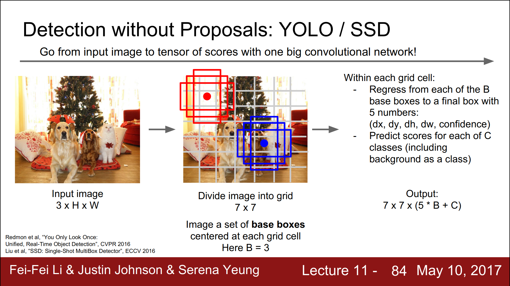
- But the idea is that rather than doing independent processing for each of these potential regions instead we want to try to treat this like a regression problem and just make all these predictions all at once with some big convolutional network.
- So now given our input image you imagine dividing that input image into some coarse grid,
- in this case it's a seven by seven grid
- and now within each of those grid cells you imagine some set of base bounding boxes.
- Here I've drawn three base bounding boxes like a tall one, a wide one, and a square one but in practice you would use more than three.
- So now for each of these grid cells and for each of these base bounding boxes you want to predict several things.
- 1. One, you want to predict an offset off the base bounding box to predict what is the true location of the object off this base bounding box.
- 2. And you also want to predict classification scores so maybe a classification score for each of these base bounding boxes. How likely is it that an object of this category appears in this bounding box.
- So then at the end we end up predicting from our input image, we end up predicting this giant tensor of seven by seven grid by 5B + C. [ ie tensor shape: 7 x 7 x (5B+C) ]
- So that's just where we have B base bounding boxes, we have five numbers for each [bounding box] giving our offset [4 values: b_x, b_y, b_w, b_h] and our confidence[8][9] [1 value] for that base bounding box and C classification scores for our C categories.
- So then we kind of see object detection as this input of an image, output of this three dimensional tensor and you can imagine just training this whole thing with a giant convolutional network.
- And that's kind of what these single shot methods [gemeint als Oberbegriff für YOLO und SSD] do where they just, and again matching the ground truth objects into these potential base boxes[10] becomes a little bit hairy but that's what these methods do.
YOLOv1 architecture, speed
- The YOLO consists of 24 conv layers and 2 FC layers, of which some conv layers construct ensembles of inception modules with 1 × 1 reduction layers followed by 3 × 3 conv layers.
- The network can process images in real-time at 45 FPS and a simplified version Fast YOLO can reach 155 FPS with better results than other real-time detectors.
YOLOv2
- An improved version, YOLOv2, was later proposed in [72], which adopts several impressive strategies, such as BN, anchor boxes, dimension cluster and multi-scale training.
Difference YOLO vs SSD
Problems of YOLO
- YOLO has a difficulty in dealing with small objects in groups, which is caused by strong spatial constraints imposed on bounding box predictions [17].
- Meanwhile, YOLO struggles to generalize to objects in new/unusual aspect ratios/ configurations and
- produces relatively coarse features due to multiple downsampling operations.
Solution: SSD
- Aiming at these problems, Liu et al. proposed a Single Shot MultiBox Detector (SSD) [71], which was inspired by the anchors adopted in MultiBox [68], RPN [18] and multi-scale representation [95].
- Given a specific feature map, instead of fixed grids adopted in YOLO, the SSD takes advantage of a set of default anchor boxes with different aspect ratios and scales [dh. die BBoxes sind nicht an einer bestimmten Stelle im Bild, sondern werden ganz allgemein (nur über Größe und Form, aber nicht location) festgelegt] to discretize the output space of bounding boxes.
- To handle objects with various sizes, the network fuses predictions from multiple feature maps with different resolutions.
- 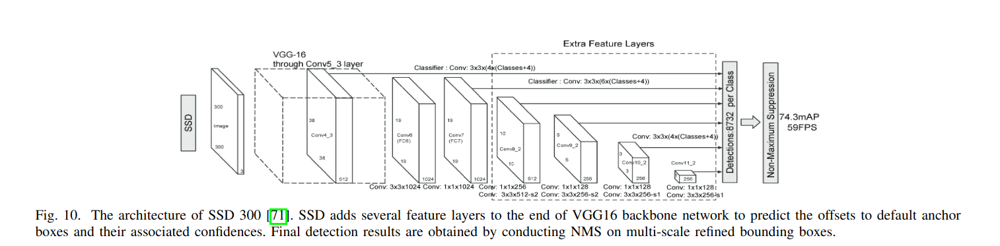
- The architecture of SSD is demonstrated in Figure 10. Given the VGG16 backbone architecture, SSD adds several feature layers to the end of the network, which are responsible for predicting the offsets to default boxes[11] with different scales and aspect ratios and their associated confidences.
- The network is trained with a weighted sum of localization loss (e.g. Smooth L1) and confidence loss (e.g. Softmax), which is similar to (1).
- Final detection results are obtained by conducting NMS [=non-max suppression] on multi-scale refined bounding boxes.
Similarity to faster R-CNN [egal bisschen vage]
- [Johnson] And by the way, the region proposal network that gets used in faster R-CNN ends up looking quite similar to these where they have some set of base bounding boxes over some gridded image, another region proposal network does some regression plus some classification. So there's kind of some overlapping ideas here.
- So in faster R-CNN we're kind of treating the region proposal step as kind of this fixed end-to-end regression problem and then we do the separate per region processing
- but now with these single shot methods we only do that first step [=region proposal step] and just do all of our object detection with a single forward pass.
Similarity to R-CNN
- [paper] YOLO shares some similarities with R-CNN. Each grid cell proposes potential bounding boxes and scores those boxes using convolutional features.
- [Differences:] [paper]
- However, our system puts spatial constraints on the grid cell proposals which helps mitigate multiple detections of the same object.
- Our system also proposes far fewer bounding boxes, only 98 per image compared to about 2000 from Selective Search.
- Finally, our system combines these individual components into a single, jointly optimized model [bei R-CNN wird Selective Search extern performt, also nicht jointly optimized].
Fast R-CNN vs YOLO
- Second, YOLO reasons globally about the image when making predictions. Unlike sliding window and region proposal-based techniques, YOLO sees the entire image during training and test time so it implicitly encodes contextual information about classes as well as their appearance. [paper]
- Fast R-CNN, a top detection method [14], mistakes background patches in an image for objects because it can’t see the larger context. YOLO makes less than half the number of background errors compared to Fast R-CNN. [paper]
- Furthermore, YOLO produces fewer false positives on background, which makes the cooperation with Fast R-CNN [=model combination] become possible. [paper]
- [paper] YOLO makes far fewer background mistakes than Fast R-CNN. By using YOLO to eliminate background detections from Fast R-CNN we get a significant boost in performance. For every bounding box that R-CNN predicts we check to see if YOLO predicts a similar box. If it does, we give that prediction a boost based on the probability predicted by YOLO and the overlap between the two boxes.
- The best Fast R-CNN model achieves a mAP of 71.8% on the VOC 2007 test set. When combined with YOLO, its mAP increases by 3.2% to 75.0%.
- We also tried combining the top Fast R-CNN model with several other versions of Fast R-CNN. Those ensembles produced small increases in mAP between .3 and .6%, see Table 2 for details.
- The boost from YOLO is not simply a byproduct of model ensembling since there is little benefit from combining different versions of Fast R-CNN. Rather, it is precisely because YOLO makes different kinds of mistakes at test time that it is so effective at boosting Fast R-CNN’s performance.
- Unfortunately, this combination doesn’t benefit from the speed of YOLO since we run each model seperately and then combine the results. However, since YOLO is so fast it doesn’t add any significant computational time compared to Fast R-CNN.
[ST] Obj det variables & hyperparameters
- So object detection has a ton of different variables: There could be different base networks like VGG, ResNet, we've seen different metastrategies for object detection including this faster R-CNN type region based family of methods, this single shot detection family of methods.
- (There's kind of a hybrid that I didn't talk about called R-FCN which is somewhat in between.)
- There's a lot of different hyperparameters like what is the image size, how many region proposals do you use.
- And there's actually this really cool paper that will appear at CVPR this summer that does a really controlled experimentation around a lot of these different variables and tries to tell you how do these methods all perform under these different variables. So if you're interested I'd encourage you to check it out
- but kind of one of the key takeaways is that
- the faster R-CNN style of region based methods tends to give higher accuracies but ends up being much slower than the single shot methods because the single shot methods don't require this per region processing.
- Also as a bit of aside, I had this fun paper with Andre a couple years ago that kind of combined object detection with image captioning and did this problem called dense captioning
- so now the idea is that rather than predicting a fixed category label for each region, instead we want to write a caption for each region.
- And again, we had some data set that had this sort of data where we had a data set of regions together with captions and then we sort of trained this giant end-to-end model that just predicted these captions all jointly.
- And this ends up looking somewhat like faster R-CNN where you have some region proposal stage then a bounding box, then some per region processing.
- But rather than a SVM or a softmax loss instead those per region processing has a whole RNN language model that predicts a caption for each region.
- So that ends up looking quite a bit like faster R-CNN.
- There's a video here but I think we're running out of time so I'll skip it.
- But the idea here is that once you have this, you can kind of tie together a lot of these ideas and if you have some new problem that you're interested in tackling like dense captioning, you can recycle a lot of the components that you've learned from other problems like object detection and image captioning and kind of stitch together one end-to-end network that produces the outputs that you care about for your problem.
[ST] Mask R-CNN
- So the last task that I want to talk about is this idea of instance segmentation. So here instance segmentation is in some ways like the full problem: We're given an input image and we want to predict
- 1. the locations and identities of objects in that image similar to object detection,
- 2. but rather than just predicting a bounding box for each of those objects, instead we want to predict a whole segmentation mask for each of those objects and predict which pixels in the input image corresponds to each object instance.
- So this is kind of like a hybrid between semantic segmentation and object detection
- because like object detection we can handle multiple objects and we differentiate the identities of different instances
- so in this example since there are two dogs in the image and instance segmentation method actually distinguishes between the two dog instances in the output
- and kind of like semantic segmentation we have this pixel wise accuracy where for each of these objects we want to say which pixels belong to that object.
- So there's been a lot of different methods that people have tackled, for instance segmentation as well, but the current state of the art is this new paper called Mask R-CNN that actually just came out on archive about a month ago so this is not yet published, this is like super fresh stuff. And this ends up looking a lot like faster R-CNN.
- So it has this multi-stage processing approach where we take our whole input image, that whole input image goes into some convolutional network and some learned region proposal network that's exactly the same as faster R-CNN and now once we have our learned region proposals then we project those proposals onto our convolutional feature map just like we did in fast and faster R-CNN.
- But now rather than just making a classification and a bounding box for regression decision for each of those boxes we in addition want to predict a segmentation mask for each of those region proposals.
- So now it kind of looks like a mini, like a semantic segmentation problem inside each of the region proposals that we're getting from our region proposal network.
- So now after we do this ROI aligning to warp our features corresponding to the region of proposal into the right shape, then we have two different branches.
- 1. One branch will come up that looks exact, and this first branch at the top looks just like faster R-CNN and it will predict classification scores telling us what is the category corresponding to that region of proposal or alternatively whether or not it's background. And we'll also predict some bounding box coordinates that regressed off the region proposal coordinates.
- 2. And now in addition we'll have this branch at the bottom which looks basically like a semantic segmentation mini network which will classify for each pixel in that input region proposal whether or not it's an object
- so this mask R-CNN problem, this mask R-CNN architecture just kind of unifies all of these different problems that we've been talking about today into one nice jointly end-to-end trainable model.
- And it's really cool and it actually works really really well so when you look at the examples in the paper they're kind of amazing. They look kind of indistinguishable from ground truth.
- So in this example on the left you can see that there are these two people standing in front of motorcycles, it's drawn the boxes around these people, it's also gone in and labeled all the pixels of those people and it's really small but actually in the background on that image on the left there's also a whole crowd of people standing very small in the background. It's also drawn boxes around each of those and grabbed the pixels of each of those images.
- And you can see that this is just, it ends up working really really well and it's a relatively simple addition on top of the existing faster R-CNN framework.
Pose estimation
- So I told you that mask R-CNN unifies everything we talked about today and it also does pose estimation by the way. You can do pose estimation by predicting these joint coordinates for each of the joints of the person so you can do mask R-CNN to do joint object detection, pose estimation, and instance segmentation.
- And the only addition we need to make is that for each of these region proposals we add an additional little branch that predicts these coordinates of the joints for the instance of the current region proposal.
- So now this is just another loss, like another layer that we add, another head coming out of the network and an additional term in our multi-task loss.
- But once we add this one little branch then you can do all of these different problems jointly and you get results looking something like this: Where now this network, like a single feed forward network is deciding
- how many people are in the image,
- detecting where those people are,
- figuring out the pixels corresponding to each of those people
- and also drawing a skeleton estimating the pose of those people
- and this works really well even in crowded scenes like this classroom where there's a ton of people sitting and they all overlap each other and it just seems to work incredibly well.
- And because it's built on the faster R-CNN framework it also runs relatively close to real time so this is running something like five frames per second on a GPU because this is all sort of done in the single forward pass of the network.
- So this is again, a super new paper but I think that this will probably get a lot of attention in the coming months.
- Questions:
- How much training data do you need?
- So all of these instant segmentation results were trained on the Microsoft Coco data set so Microsoft Coco is roughly 200,000 training images. It has 80 categories that it cares about so in each of those 200,000 training images it has all the instances of those 80 categories labeled. So there's something like 200,000 images for training and there's something like I think an average of fivee or six instances per image. So it actually is quite a lot of data. And for Microsoft Coco for all the people in Microsoft Coco they also have all the joints annotated as well so this actually does have quite a lot of supervision at training time you're right, and actually is trained with quite a lot of data. So I think one really interesting topic to study moving forward is that we kind of know that if you have a lot of data to solve some problem, at this point we're relatively confident that you can stitch up some convolutional network that can probably do a reasonable job at that problem but figuring out ways to get performance like this with less training data is a super interesting and active area of research and I think that's something people will be spending a lot of their efforts working on in the next few years.
- So just to recap, today we had kind of a whirlwind tour of a whole bunch of different computer vision topics and we saw how a lot of the machinery that we built up from image classification can be applied relatively easily to tackle these different computer vision topics. And next time we'll talk about, we'll have a really fun lecture on visualizing CNN features. Well also talk about DeepDream and neural style transfer.
lec15
Practical advice on CNN training
Data Augmentation
CNNs for Segmentation
FCN
Encoder-Decoder architecture
Transpose convolutions (Learnable Upsampling)
- Transposed convolutions suffer from chequered board effects as shown below
- 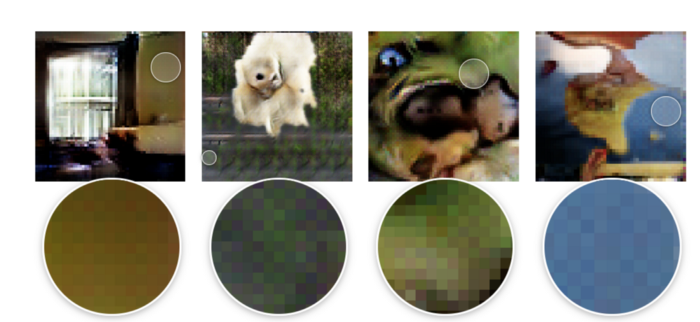
- The main cause of this is uneven overlap at some parts of the image causing artifacts.
- This can be fixed or reduced by using kernel-size divisible by the stride, for e.g taking a kernel size of 2x2 or 4x4 when having a stride of 2.
Extensions
(Long) Skip Connections
- Long skip connections often exist in architectures that are symmetrical, where the spatial dimensionality is reduced in the encoder part and is gradually increased in the decoder part
- The aforementioned architecture of the encoder-decoder scheme along with long skip connections is often referred as U-shape (Unet).
- It is utilized for tasks that the prediction has the same spatial dimension as the input such as image segmentation, optical flow estimation, video prediction, etc.
- By introducing skip connections in the encoder-decoded architecture, fine-grained details can be recovered in the prediction.
- Even though there is no theoretical justification, symmetrical long skip connections work incredibly effectively in dense prediction tasks (medical image segmentation).
- long skip connections are used to pass features from the encoder path to the decoder path in order to recover spatial information lost during downsampling.
Dilated/atrous convolution
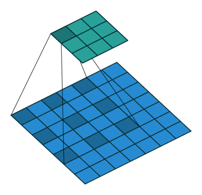
- Dilated convolutions introduce another parameter to convolutional layers called the dilation rate. This defines a spacing between the values in a kernel. A 3x3 kernel with a dilation rate of 2 will have the same field of view as a 5x5 kernel, while only using 9 parameters. Imagine taking a 5x5 kernel and deleting every second column and row.
- This delivers a wider field of view [=receptive field] at the same computational cost [=same # parameters].
- Dilated convolutions are particularly popular in the field of real-time segmentation.
- Use them if you need a wide field of view and cannot afford multiple convolutions or larger kernels.
SPP
- [paperswithcode] Spatial Pyramid Pooling (SPP) is a pooling layer that removes the fixed-size constraint of the network, i.e. a CNN does not require a fixed-size input image.
- Specifically, we add an SPP layer on top of the last convolutional layer.
- The SPP layer pools the features and generates fixed-length outputs, which are then fed into the fully-connected layers (or other classifiers).
- In other words, we perform some information aggregation at a deeper stage of the network hierarchy (between convolutional layers and fully-connected layers) to avoid the need for cropping or warping at the beginning.
lec16 - Human Pose Est; Matching; RNNs
FCNs for Human Pose Est
Definitions
[source]
- Keypoints / interest points
- Keypoints are the same thing as interest points. They are spatial locations, or points in the image that define what is interesting or what stand out in the image. They are invariant to image rotation, shrinkage, translation, distortion, and so on.
- Keypoint detection involves simultaneously detecting people and localizing their keypoints.
Matching: SiameseNN + Triplet loss
Triplet Generation for SiameseNN
Online hard triplet mining
FaceNet
- In order to ensure fast convergence it is crucial to select triplets that violate the triplet constraint
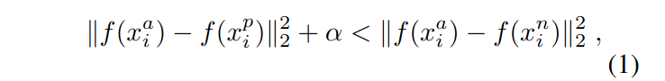
- This means that, given 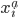, we want to select an 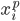 (hard positive) such that 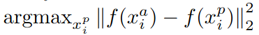 and similarly 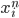 (hard negative) such that 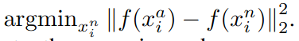
- [Problems with Full batch training:]
- It is infeasible to compute the argmin and argmax across the whole training set.
- Additionally, it might lead to poor training, as mislabelled and poorly imaged faces would dominate the hard positives and negatives.
- There are two obvious choices that avoid this issue:
- Generate triplets offline [offline, weil (fast) full batch]
- every n steps [ie. n mini-batches], [reduces computation]
- using the most recent network checkpoint and
- computing the argmin and argmax on a subset of the data [embeddings]. [reduces computation]
- Generate triplets online [online, weil mini-batch (~1800 s. hier; full training set > 10M s. hier)]. This can be done by
- selecting the hard positive/negative exemplars from within a mini-batch.
- Here, we focus on the online generation and use large mini-batches in the order of a few thousand exemplars and only compute the argmin and argmax within a mini-batch.
- [A. Build the mini-batch:]
- [1. Sample (easy and hard) Positives:] To have a meaningful representation of the anchor-positive distances, it needs to be ensured that a minimal number of [positive] exemplars of any one identity is present in each mini-batch.
- In our experiments we sample the training data such that around 40 faces are selected per identity per mini-batch.
- [2. Sample (easy and hard) Negatives:] Additionally, randomly sampled negative faces are added to each mini-batch.
- [B. Generate triplets from mini-batch from A:]
- Instead of picking the hardest positive, we use all anchor-positive pairs in a mini-batch while still selecting the hard negatives.
- [dh for each anchor (1800), all positives (39), hard negative (1) (because one argmin per anchor); but avoid doubling anchor-positive pairs, dh.
- \# triplets used for training = 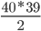 a-p pairs * 1 = 780 < 1800 triplets]
- [Begründung für diese Entscheidung:] We don’t have a side-by-side comparison of hard anchor-positive pairs versus all anchor-positive pairs within a mini-batch [dh die haben das verglichen, aber nicht im paper aufgeschrieben], but we found in practice that the “all anchor-positive method” was more stable and converged slightly faster at the beginning of training.
- We also explored the offline generation in conjunction with the online generation and it may allow the use of smaller batch sizes, but the experiments were inconclusive.
- Use semi-hard exemplars: Selecting the hardest negatives can in practice lead to bad local minima early on in training, specifically it can result in a collapsed model (i.e. 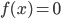).
- In order to mitigate this, it helps to select such that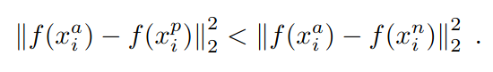
- We call these negative exemplars semi-hard, as they are further away from the anchor than the positive exemplar, but still hard because the squared distance is close to the anchor-positive distance. Those negatives lie inside the margin α.
- As mentioned before, correct triplet selection is crucial for fast convergence.
- On the one hand we would like to use small mini-batches as these tend to improve convergence during Stochastic Gradient Descent (SGD) [20].
- On the other hand, implementation details make batches of tens to hundreds of exemplars more efficient.
- The main constraint with regards to the batch size, however, is the way we select hard relevant triplets from within the mini-batches.
- In most experiments we use a batch size of around 1,800 exemplars.
- Table 6 shows the impact of large amounts of training data. Due to time constraints this evaluation was run on a smaller model [ie. less parameter]; the effect may be even larger on larger models.
- It is clear that using tens of millions of exemplars results in a clear boost of accuracy on our personal photo test set from section 4.2. Compared to only millions of images the relative reduction in error is 60%. Using another order of magnitude more images (hundreds of millions) still gives a small boost, but the improvement tapers off.
Hermans, Leibe
- A major caveat of the triplet loss, though, is
- that as the dataset gets larger, the possible number of triplets grows cubically, rendering a long enough training impractical.
- To make matters worse, fθ relatively quickly learns to correctly map most trivial triplets, rendering a large fraction of all triplets uninformative.
- Thus mining hard triplets becomes crucial for learning.
- Intuitively, being told over and over again that people with differently colored clothes are different persons does not teach one anything, whereas seeing similarly-looking but different people (hard negatives), or pictures of the same person in wildly different poses (hard positives) dramatically helps understanding the concept of “same person”.
- On the other hand, being shown only the hardest triplets would select outliers in the data unproportionally often and make fθ unable to learn “normal” associations, as will be shown in Table 1.
- Examples of typical hard positives, hard negatives, and outliers are shown in the Supplementary Material.
- Hence it is common to only mine moderate negatives [29] and/or moderate positives [31].
- Regardless of which type of mining is being done, it is a separate step from training and adds considerable overhead, as it requires embedding a large fraction of the data with the most recent fθ and computing all pairwise distances between those data points.
- In a classical implementation, once a certain set of B triplets has been chosen [dh. erst nach B ! nicht davor !], their images are stacked into a batch of size 3B, for which the 3B embeddings are computed, which are in turn used to create B terms contributing to the loss.
- Problem: Given the fact that there are up to 6B**2 −4B [unwahrscheinlich in Klausur] possible combinations of these 3B images that are valid triplets, using only B of them seems wasteful.
- With this realization, we [Leibe] propose an organizational modification to the classic way of using the triplet loss:
- 1. [sozusagen Schritt A bezogen auf oben] form batches by randomly sampling P classes (person identities), and then randomly sampling K images of each class (person), thus resulting in a batch of PK images.[12] [dh K-1 positives und Rest vom mini-batch wird als negatives behandelt]
- 2. [sozusagen Schritt B bezogen auf oben] Now, for each sample in the batch, we can select the hardest positive and the hardest negative samples within the batch when forming the triplets for computing the loss, which we call Batch Hard [...].
- This results in PK terms contributing to the loss, a threefold[13] increase over the traditional formulation.
- Additionally, the selected triplets can be considered moderate triplets, since they are the hardest within a small subset of the data, which is exactly what is best for learning with the triplet loss
- alternative to 2.: This new formulation of sampling a batch immediately suggests another alternative, that is to simply use all possible PK(PK −K)(K −1) combinations of triplets, which corresponds to the strategy chosen in [9] and which we call Batch All [...].
- At this point, it is important to note that both LBH and LBA still exactly correspond to the standard triplet loss in the limit of infinite training.
- Both the max and min functions [in the LBH loss and LBA loss] are continuous and differentiable almost everywhere, meaning they can be used in a model trained by stochastic (sub-)gradient descent without concern.
- In fact, they are already widely available in popular deep-learning frameworks for the implementation of max-pooling and the ReLU [11] non-linearity.
- Most similar to our batch hard and batch all losses is the Lifted Embedding loss [32], which fills the batch with triplets but considers all but the anchor-positive pair as negatives: [...]
- While [32] motivates a “hard”-margin loss similar to LBH and LBA, they end up optimizing the smooth bound of it given in the above equation. Additionally, traditional 3B batches are considered, thus using all possible negatives, but only one positive pair per triplet.
- This leads us to propose a generalization of the Lifted Embedding loss based on PK batches which considers all anchor-positive pairs as follows: [...]
RNN [Stanford]
Motivation, “Pitch”
- So that was kind of our brief recap of the CNN architectures that we saw last lecture, and then today, we're going to move to one of my favorite topics to talk about, which is recurrent neural networks.
So far ...
- So far in this class, we've seen, what I like to think of as kind of a vanilla feed forward network, all of our network architectures have this flavor, where we receive some input and that input is a fixed size object, like an image or vector. That input is fed through some set of hidden layers and produces a single output, like a set of classifications scores over a set of categories.
RNN model types
- But in some context in machine learning, we want to have more flexibility in the types of data that our models can process. So once we move to this idea of recurrent neural networks, we have a lot more opportunities to play around with the types of input and output data that our networks can handle:
- So once we have recurrent neural networks, we can do what we call these one to many models:
- where maybe our input is some object of fixed size, like an image, but now our output is a sequence of variable length, such as a caption. Where different captions might have different numbers of words, so our output needs to be variable in length.
- We also might have many to one models,
- where our input could be variably sized. This might be something like a piece of text, and we want to say what is the sentiment of that text, whether it's positive or negative in sentiment. Or in a computer vision context, you might imagine taking as input a video, and that video might have a variable number of frames. And now we want to read this entire video of potentially variable length. And then at the end, make a classification decision about maybe what kind of activity or action is going on in that video.
- We also might also have problems where we want both the inputs and the output to be variable (many to many) in length.
- We might see something like this in machine translation, where our input is some, maybe, sentence in English, which could have a variable length, and our output is maybe some sentence in French, which also could have a variable length. And crucially, the length of the English sentence might be different from the length of the French sentence. So we need some models that have the capacity to accept both variable length sequences on the input and on the output.
- Finally, we might also consider problems where our input is variably length, like something like a video sequence with a variable number of frames. And now we want to make a decision for each element of that input sequence (many to many).
- So in the context of videos, that might be making some classification decision along every frame of the video.
- And recurrent neural networks are this kind of general paradigm for handling variable sized sequence data that allow us to pretty naturally capture all of these different types of setups in our models.

- Sequential Processing of Non-Sequence Data: So recurrent neural networks are actually important, even for some problems that have a fixed size input and a fixed size output. Recurrent neural networks can still be pretty useful.
- So in this example[14], we might want to do, for example, sequential processing of our input. So here, we're receiving a fixed size input like an image, and we want to make a classification decision about, like, what number is being shown in this image? But now, rather than just doing a single feed forward pass and making the decision all at once, this network is actually looking around the image and taking various glimpses[15] of different parts of the image. And then after making some series of glimpses, then it makes its final decision as to what kind of number is present.
- So here, even though our input was an image, and our output was a classification decision, even in this context, this idea of being able to handle variably length processing with recurrent neural networks can lead to some really interesting types of models.

- There's a really cool paper[16] that I like that applied this same type of idea to generating new images. Where now, we want the model to synthesize brand new images that look kind of like the images it saw in training, and we can use a recurrent neural network architecture to actually paint these output images sort of one piece at a time in the output.
- You can see that, even though our output is this fixed size image, we can have these models that are working over time to compute parts of the output one at a time sequentially. And we can use recurrent neural networks for that type of setup as well.
RNN Basics
Interpretation 1[confusing]: Hidden state that feeds back at itself, recurrently
- So after this sort of cool pitch about all these cool things that RNNs can do, you might wonder, like what exactly are these things?
- So in general, a recurrent neural network has this little recurrent core cell and it will take some input x, feed that input into the RNN, and that RNN has some internal hidden state, and that internal hidden state will be updated every time that the RNN reads a new input. And that internal hidden state will be then fed back to the model the next time it reads an input.
- And frequently, we will want our RNN"s to also produce some output at every time step, so we'll have this pattern where it will read an input, update its hidden state, and then produce an output.
- So then the question is what is the functional form of this recurrence relation that we're computing?
- So inside this little green RNN block, we're computing some recurrence relation, with a function . So this function will depend on some weights . It will accept the previous hidden state , as well as the input at the current state , and this will output the next hidden state (updated hidden state) .
- And now, then as we read the next input, this hidden state, this new hidden state , will then just be passed into the same function as we read the next input .
- And now, if we wanted to produce some output at every time step of this network, we might attach some additional fully connected layers that read in this at every time step and make that decision based on the hidden state at every time step.
- And one thing to note is that we use the same function , and the same weights at every time step of the computation.
- [“confusing picture”, wie er selbst sagt, s. nächster Punkt] So then kind of the simplest function form that you can imagine is what we call this vanilla recurrent neural network.
- So here, we have this same functional form from the previous slide, where we're taking in our previous hidden state and our current input and we need to produce the next hidden state.
- And the kind of simplest thing you might imagine is that we have some weight matrix, , that we multiply against the input, , as well as another weight matrix, , that we multiply against the previous hidden state.
- So we make these two multiplications against our two states, add them together, and squash them through a , so we get some kind of non-linearity in the system.
- You might be wondering why we use a tanh here and not some other type of non-linearity? After all that we've said negative about tanh's in previous lectures
- and I think we'll return a little bit to that later on when we talk about more advanced architectures, like lstm.
- So then, in addition in this architecture, if we wanted to produce some at every time step, you might have another weight matrix, , that accepts this hidden state and then transforms it to some to produce maybe some class score predictions at every time step.
Interpretation 2: Unrolling computational graph for multiple time steps
- You can kind of think of recurrent neural networks in two ways:
- One is this concept of having a hidden state that feeds back at itself, recurrently. But I find that picture a little bit confusing.
- And sometimes, I find it clearer to think about unrolling this computational graph for multiple time steps. And this makes the data flow of the hidden states and the inputs and the outputs and the weights maybe a little bit more clear.
- So then at the first time step, we'll have some initial hidden state h zero. This is usually initialized to zeros for most contexts, in most contexts, and then we'll have some input, x t. This initial hidden state, h zero, and our current input, x t, will go into our f w function. This will produce our next hidden state, h one.
- And then, we'll repeat this process when we receive the next input. So now our current h one and our x two, will go into that same f w, to produce our next output, h two.
- And this process will repeat over and over again, as we consume all of the input, x ts, in our sequence of inputs.
- And now, one thing to note is that we can actually make this even more explicit and write the w matrix in our computational graph. And here you can see that we're re-using the same w matrix at every time step of the computation. So now every time that we have this little f w block, it's receiving a unique h and a unique x, but all of these blocks are taking the same w.
- And if you remember, we talked about how gradient flows in back propagation, when you re-use the same node multiple times in a computational graph, then remember during the backward pass, you end up summing the gradients into the w matrix when you're computing a .
- So, if you kind of think about the back propagation for this model, then you'll have a separate gradient for w flowing from each of those time steps, and then the final gradient for w will be the sum of all of those individual per time step gradients.
- We can also write to this y t explicitly in this computational graph. So then, this output, h t, at every time step might feed into some other little neural network that can produce a y t, which might be some class scores, or something like that, at every time step.
- We can also make the loss more explicit. So in many cases, you might imagine that you have some ground truth label at every time step of your sequence, and then you'll compute some individual loss at every time step of these outputs, y t's. And this loss will frequently be something like softmax loss, in the case where you have, maybe, a ground truth label at every time step of the sequence. And now the final loss for this entire training stop, will be the sum of these individual losses.
- So now, we had a scalar loss at every time step. And we just summed them up to get our final scalar loss at the top of the network. And now, if you think about backpropagation through this thing, we need, in order to train the model, we need to compute the gradient of the loss with respect to w. So, we'll have loss flowing from that final loss into each of these time steps. And then each of those time steps will compute a local gradient on the weights, w, which will all then be summed to give us our final gradient for the weights, w.
RNN model types [details]
many to one situation
- Now if we have a many to one situation, where maybe we want to do something like sentiment analysis, then we would typically make that decision based on the final hidden state of this network. Because this final hidden state kind of summarizes all of the context from the entire sequence.
one to many situation
- Also, if we have a one to many situation, where we want to receive a fixed sized input and then produce a variably sized output, then you'll commonly use that fixed size input to initialize the initial hidden state of the model, and now the recurrent network will tick for each cell in the output. And now, as you produce your variably sized output, you'll unroll the graph for each element in the output.
sequence to sequence models
- When we talk about the sequence to sequence models where you might do something like machine translation, where you take a variably sized input and a variably sized output. You can think of this as a combination of the many to one, plus a one to many. So, we'll kind of proceed in two stages, what we call an encoder and a decoder.
- So if you're the encoder, we'll receive the variably sized input, which might be your sentence in English, and then summarize that entire sentence using the final hidden state of the encoder network. And now we're in this many to one situation where we've summarized this entire variably sized input in this single vector,
- and now, we have a second decoder network, which is a one to many situation, which will input that single vector summarizing the input sentence and now produce this variably sized output, which might be your sentence in another language. And now in this variably sized output, we might make some predictions at every time step, maybe about what word to use. And you can imagine training this entire thing by unrolling this computational graph summing the losses at the output sequence and just performing back propagation, as usual.
Example: language model
- So as a bit of a concrete example, one thing that we frequently use recurrent neural networks for, is this problem called language modeling. So in the language modeling problem, we want to have our network, sort of, understand how to produce natural language.
- So, this might happen at the character level where our model will produce characters one at a time.
- This might also happen at the word level where our model will produce words one at a time.
- But in a very simple example, you can imagine this character level language model, where the network will
- read some sequence of characters and
- then it needs to predict, what will the next character be in this stream of text.
- So in this example, we have this very small vocabulary of four letters, h, e, l, and o, and we have this example training sequence of the word hello, h, e, l, l, o. So during training, when we're training this language model, we will feed the characters of this training sequence as inputs, as x ts, to out input of our, we'll feed the characters of our training sequence, these will be the x ts that we feed in as the inputs to our recurrent neural network. And then, each of these inputs is a letter, and we need to figure out a way to represent letters in our network. So what we'll typically do is, figure out what is our total vocabulary. In this case, our vocabulary has four elements. And each letter will be represented by a vector that has zeros in every slot but one, and a 1 for the slot in the vocabulary corresponding to that letter. In this little example, since our vocab has the four letters, h, e, l, o, then in our input sequence, the h is represented by a four element vector with a 1 in the first slot and zeros in the other three slots. And we use the same sort of pattern to represent all the different letters in the input sequence.
- Now, during this forward pass of what this network is doing, at the first time step, it will receive the input letter h. That will go into the first RNN cell, and then we'll produce this output, y t, which is the network making predictions about, for each letter in the vocabulary, which letter does it think is most likely going to come next.
- In this example, the correct output letter was e because our training sequence was hello, but the model is actually predicting, I think it's actually predicting o as the most likely letter. So in this case, this prediction was wrong and we would use softmax loss to quantify our unhappiness with these predictions.
- The next time step, we would feed in the second letter in the training sequence, e, and this process will repeat. We'll now represent e as a vector. Use that input vector together with the previous hidden state to produce a new hidden state and now use the second hidden state to, again, make predictions over every letter in the vocabulary.
- In this case, because our training sequence was hello, after the letter e, we want our model to predict l. In this case, our model may have very low predictions for the letter l, so we would incur high loss.
- And you kind of repeat this process over and over, and if you train this model with many different sequences, then eventually it should learn how to predict the next character in a sequence based on the context of all the previous characters that it's seen before.
- And now, if you think about what happens at test time, after we train this model, one thing that we might want to do with it is a sample from the model, and actually use this trained neural network model to synthesize new text that kind of looks similar in spirit to the text that it was trained on.
- The way that this will work is we'll typically see the model with some input prefix of text.
- In this case, the prefix is just the single letter h,
- and now we'll feed that letter h through the first time step of our recurrent neural network. It will produce this distribution of scores over all the characters in the vocabulary.
- Now, at training time, we'll use these scores to actually sample from it.
- So we'll use a softmax function to convert those scores into a probability distribution and
- then we will sample from that probability distribution to actually synthesize the second letter in the sequence.
- And in this case, even though the scores were pretty bad, maybe we got lucky and sampled the letter e from this probability distribution.
- And now, we'll take this letter e that was sampled from this distribution and feed it back as input into the network at the next time step. Now, we'll take this e, pull it down from the top, feed it back into the network as one of these, sort of, one hot vector representations,
- and then repeat the process in order to synthesize the second letter in the output.
- And we can repeat this process [with another input prefix or the same (we sample the character from a probability distribution, ie. even the same input prefix might produce a different result !)] over and over again to synthesize a new sequence using this trained model, where we're synthesizing the sequence one character at a time using these predicted probability distributions at each time step.
- Why might we sample instead of just taking the character with the largest score?
- In this case, because of the probability distribution that we had, it was impossible to get the right character, so we had the sample so the example could work out, and it would make sense. But in practice, sometimes you'll see both. So sometimes you'll just take the argmax probability, and that will sometimes be a little bit more stable, but one advantage of sampling, in general, is that it lets you get diversity from your models. Sometimes you might have the same input, maybe the same prefix, or in the case of image captioning, maybe the same image. But then if you sample rather than taking the argmax, then you'll see that sometimes these trained models are actually able to produce multiple different types of reasonable output sequences, depending on the kind, depending on which samples they take at the first time steps. It's actually kind of a benefit cause we can get now more diversity in our outputs.
- At test time, could we feed in this whole softmax vector rather than a one hot vector?
- There's kind of two problems with that. One is that that's very different from the data that it saw at training time. In general, if you ask your model to do something at test time, which is different from training time, then it'll usually blow up. It'll usually give you garbage and you'll usually be sad. The other problem is that in practice, our vocabularies might be very large. So maybe, in this simple example, our vocabulary is only four elements, so it's not a big problem. But if you're thinking about generating words one at a time, now your vocabulary is every word in the English language, which could be something like tens of thousands of elements. So in practice, this first element, this first operation that's taking in this one hot vector, is often performed using sparse vector operations rather than dense factors. It would be, sort of, computationally really bad if you wanted to have this load of 10,000 elements softmax vector. So that's usually why we use a one hot instead, even at test time.
Truncated Backpropagation Through Time
- This idea that we have a sequence and we produce an output at every time step of the sequence and then finally compute some loss, this is sometimes called backpropagation through time because you're imagining that in the forward pass, you're kind of stepping forward through time and then during the backward pass, you're sort of going backwards through time to compute all your gradients.
- This can actually be kind of problematic if you want to train the sequences that are very, very long.
- So if you imagine that we were kind of trying to train a neural network language model on maybe the entire text of Wikipedia, which is, by the way, something that people do pretty frequently, this would be super slow, and every time we made a gradient step, we would have to make a forward pass through the entire text of all of wikipedia, and then make a backward pass through all of wikipedia, and then make a single gradient update. And that would be super slow. Your model would never converge. It would also take a ridiculous amount of memory so this would be just really bad.
- In practice, what people do is this, sort of, approximation called truncated backpropagation through time. Here, the idea is that, even though our input sequence is very, very long, and even potentially infinite, what we'll do is that during, when we're training the model, we'll step forward for some number of steps, maybe like a hundred is kind of a ballpark number that people frequently use, and we'll step forward for maybe a hundred steps, compute a loss only over this sub sequence of the data, and then back propagate through this sub sequence, and now make a gradient step. And now, when we repeat, well, we still have these hidden states that we computed from the first batch, and now, when we compute this next batch of data, we will carry those hidden states forward in time, so the forward pass will be exactly the same. But now when we compute a gradient step for this next batch of data, we will only backpropagate again through this second batch. Now, we'll make a gradient step based on this truncated backpropagation through time. This process will continue, where now when we make the next batch, we'll again copy these hidden states forward, but then step forward and then step backward, but only for some small number of time steps.
- You can kind of think of this as being analogous to stochastic gradient descent in the case of sequences.
- Remember, when we talked about training our models on large data sets. It would be super expensive to compute the gradients over every element in the data set. So instead, we kind of take small samples, small mini batches instead, and use mini batches of data to compute gradient steps in the image classification case.
Questions
- Is this kind of making the Markov assumption?
- No, not really. Because we're carrying this hidden state forward in time forever. It's making a Marcovian assumption in the sense that, conditioned on the hidden state, but the hidden state is all that we need to predict the entire future of the sequence. But that assumption is kind of built into the recurrent neural network formula from the start. And that's not really particular to backpropagation through time. Backpropagation through time, or sorry, truncated backprop through time is just the way to approximate these gradients without going making a backwards pass through your potentially very large sequence of data.
min-char-rnn (Karpathy)
- This all sounds very complicated and confusing and it sounds like a lot of code to write, but in fact, this can actually be pretty concise. Andrej has this example of what he calls min-char-rnn (git), that does all of this stuff in just 112 lines of Python.
- It handles building the vocabulary.
- It trains the model with truncated backpropagation through time.
- And then, it can actually sample from that model in actually not too much code.
- So even though this sounds like kind of a big, scary process, it's actually not too difficult. I'd encourage you, if you're confused, to maybe go check this out and step through the code on your own time, and see, kind of, all of these concrete steps happening in code.
- So this is all in just a single file, all using numpy with no dependencies. This was relatively easy to read.
Example RNN language models
- So then, once we have this idea of training a recurrent neural network language model, we can actually have a lot of fun with this. And we can take in, sort of, any text that we want. Take in, like, whatever random text you can think of from the internet, train our recurrent neural network language model on this text, and then generate new text.
Shakespeare
- So in this example, we took this entire text of all of Shakespeare's works, and then used that to train a recurrent neural network language model on all of Shakespeare.
- And you can see that at the beginning of training, it's kind of producing maybe random gibberish garbage,
- but throughout the course of training, it ends up producing things that seem relatively reasonable.
- And after this model has been trained pretty well, then it produces text that seems, kind of, Shakespeare-esque to me. "Why do what that day," replied, whatever, right, you can read this. Like, it kind of looks like Shakespeare.
- And if you actually train this model even more, and let it converge even further, and then sample these even longer sequences, you can see that it learns all kinds of crazy cool stuff that really looks like a Shakespeare play. It knows that it uses, maybe, these headings to say who's speaking. Then it produces these bits of text that have crazy dialogue that sounds kind of Shakespeare-esque. It knows to put line breaks in between these different things.
- And this is all, like, really cool, all just sort of learned from the structure of the data.
LaTeX text
- We can actually get even crazier than this. This was one of my favorite examples. I found online, there's this. Is anyone a mathematician in this room? Has anyone taken an algebraic topology course by any chance? Wow, a couple, that's impressive. So you probably know more algebraic topology than me,
- but I found this open source algebraic topology textbook online. It's just a whole bunch of text files that are like this super dense mathematics. And LaTeX, cause LaTeX lets you write equations and diagrams and everything just using plain text.
- We can actually train our recurrent neural network language model on the raw LateX source code of this algebraic topology textbook. And if we do that, then after we sample from the model, then we get something that seems like, kind of like algebraic topology.
- So it knows to like put equations. It puts all kinds of crazy stuff. It's like, to prove study, we see that F sub U is a covering of x prime, blah, blah, blah, blah, blah. It knows where to put unions. It knows to put squares at the end of proofs. It makes lemmas. It makes references to previous lemmas. Right, like we hear, like. It's namely a bi-lemma question. We see that R is geometrically something. So it's actually pretty crazy.
- It also sometimes tries to make diagrams. For those of you that have taken algebraic topology, you know that these commutative diagrams are kind of a thing that you work with a lot. So it kind of got the general gist of how to make those diagrams, but they actually don't make any sense.
- And actually, one of my favorite examples here is that it sometimes omits proofs. So it'll sometimes say, it'll sometimes say something like theorem, blah, blah, blah, blah, blah, proof omitted.
- This thing kind of has gotten the gist of how some of these math textbooks look like. We can have a lot of fun with this.
C code
- So we also tried training one of these models on the entire source code of the Linux kernel. 'Cause again, this character level stuff that we can train on, And then, when we sample this, it actually again looks like C source code.
- It knows how to write if statements. It has, like, pretty good code formatting skills. It knows to indent after these if statements. It knows to put curly braces. It actually even makes comments about some things that are usually nonsense.
- One problem with this model is that it knows how to declare variables. But
- it doesn't always use the variables that it declares.
- And sometimes it tries to use variables that haven't been declared.
- This wouldn't compile.
- I would not recommend sending this as a pull request to Linux.
- This thing also figures out how to recite this GNU license character by character. It kind of knows that you need to recite the GNU license and after the license comes some includes, then some other includes, then source code.
- This thing has actually learned quite a lot about the general structure of the data. Where, again, during training, all we asked this model to do was try to predict the next character in the sequence. We didn't tell it any of this structure, but somehow, just through the course of this training process, it learned a lot about the latent structure in the sequential data. Yeah, so it knows how to write code. It does a lot of cool stuff.
Visualizing and understanding RNNs
- I had this paper[17] with Andrej a couple years ago where we trained a bunch of these models and then we wanted to try to poke into the brains of these models and figure out like what are they doing and why are they working.
- So we saw, these recurrent neural networks have this hidden vector which is, maybe, some vector that's updated over every time step. And then what we wanted to try to figure out is, could we find some elements of this vector that have some semantic interpretable meaning.
- So what we did is
- we trained a neural network language model, one of these character level models on one of these data sets, and then
- we picked one of the elements in that hidden vector and now
- we look at what is the value of that hidden vector over the course of a sequence to try to get some sense of maybe what these different hidden states are looking for.
- When you do this, a lot of them end up looking kind of like random gibberish garbage.
- So here again, what we've done, is
- we've picked one element of that vector, and now
- we run the sequence forward through the trained model, and now
- the color of each character corresponds to the magnitude of that single scalar element of the hidden vector at every time step when it's reading the sequence.
- So you can see that a lot of the vectors in these hidden states are kind of not very interpretable. It seems like they're kind of doing some of this low level language modeling to figure out what character should come next.
- But some of them end up quite nice:
- So here we found this vector that is looking for quotes.
- You can see that there's this one hidden element, this one element in the vector, that is off, off, off, off, off blue and then once it hits a quote, it turns on and remains on for the duration of this quote. And now when we hit the second quotation mark, then that cell turns off.
- So somehow, even though this model was only trained to predict the next character in a sequence, it somehow learned that a useful thing, in order to do this, might be to have some cell that's trying to detect quotes.
- We also found this other cell that looks like it's counting the number of characters since a line break.
- So you can see that at the beginning of each line, this element starts off at zero. Throughout the course of the line, it's gradually more red, so that value increases. And then after the new line character, it resets to zero.
- So you can imagine that maybe this cell is letting the network keep track of when it needs to produce these new line characters.
- When we trained on the linux source code, we found some examples that are turning on inside the conditions of if statements.
- So this maybe allows the network to differentiate whether it's outside an if statement or inside that condition, which might help it model these sequences better.
- We also found some that turn on in comments,
- or some that seem like they're counting the number of indentation levels.
- This is all just really cool stuff because it's saying that even though we are only trying to train this model to predict next characters, it somehow ends up learning a lot of useful structure about the input data.
Image Captioning
- One kind of thing that we often use, so this has not really been computer vision so far, and we need to pull this back to computer vision since this is a vision class.
- We've alluded many times to this image captioning model where we want to build models that can input an image and then output a caption in natural language.
- There were a bunch of papers[18] a couple years ago that all had relatively similar approaches. But I'm showing the figure from the paper from our lab in a totally unbiased way.
- But, the idea here is that the caption is this variable length sequence, that is, the sequence might have different numbers of words for different captions. So this is a totally natural fit for a recurrent neural network language model.
- So then what this model looks like is we have some convolutional network which will input the, which will take as input the image, and we've seen a lot about how convolution networks work at this point, and that convolutional network will produce a summary vector of the image which will then feed into the first time step of one of these recurrent neural network language models which will then produce words of the caption one at a time.
- So the way that this kind of works at test time after the model is trained looks almost exactly the same as these character level language models that we saw a little bit ago.
- We'll take our input image, feed it through our convolutional network.
- But now instead of taking the softmax scores from an image net model, we'll instead take this 4,096 dimensional vector from the end of the model, and we'll take that vector and use it to summarize the whole content of the image.
- Now, remember when we talked about RNN language models, we said that we need to see the language model with that first initial input to tell it to start generating text. So in this case, we'll give it some special start token, which is just saying, hey, this is the start of a sentence. Please start generating some text conditioned on this image information.
- So now previously, we saw that in this RNN language model, we had these matrices that were taking the previous, the input at the current time step and the hidden state of the previous time step and combining those to get the next hidden state. Well now, we also need to add in this image information. So one way, people play around with exactly different ways to incorporate this image information, but one simple way is just to add a third weight matrix that is adding in this image information at every time step to compute the next hidden state.
- So now, we'll compute this distribution over all scores in our vocabulary and here, our vocabulary is something like all English words, so it could be pretty large.
- We'll sample from that distribution and now pass that word back as input at the next time step.
- And that will then feed that word in, again get a distribution over all words in the vocab, and again sample to produce the next word.
- So then, after that thing is all done, we'll maybe generate, we'll generate this complete sentence.
- We stop generation once we sample the special end token, which kind of corresponds to the period at the end of the sentence. Then once the network samples this end token, we stop generation and we're done and we've gotten our caption for this image.
- And now, during training, we trained this thing to put an end token at the end of every caption, so that the network kind of learned during training that end tokens come at the end of sequences. So then, during test time, it tends to sample these end tokens once it's done generating.
- So we trained this model in kind of a completely supervised way. You can find data sets that have images together with natural language captions. Microsoft COCO is probably the biggest and most widely used for this task. But you can just train this model in a purely supervised way. And then backpropagate through to jointly train both this recurrent neural network language model and then also pass gradients back into this final layer of the CNN and additionally update the weights of the CNN to jointly tune all parts of the model to perform this task.
- Once you train these models, they actually do some pretty reasonable things. These are some real results from a model, from one of these trained models, and it says things like
- “a cat sitting on a suitcase on the floor”, which is pretty impressive.
- It knows about “cats sitting on a tree branch”, which is also pretty cool.
- It knows about “two people walking on the beach with surfboards”.
- So these models are actually pretty powerful and can produce relatively complex captions to describe the image.
Caveats
- But that being said, these models are really not perfect. They're not magical. Just like any machine learning model, if you try to run them on data that is very different from the training data, they don't work very well.
- So for example, this example, it says a “woman is holding a cat in her hand”. There's clearly no cat in the image. But she is wearing a fur coat, and maybe the texture of that coat kind of looked like a cat to the model.
- Over here, we see a “woman standing on a beach holding a surfboard”. Well, she's definitely not holding a surfboard and she's doing a handstand, which is maybe the interesting part of that image, and the model totally missed that.
- Also, over here, we see this example where there's this picture of a spider web in the tree branch, and it says something like “a bird sitting on a tree branch”. So it totally missed the spider, but during training, it never really saw examples of spiders. It just knows that birds sit on tree branches during training. So it kind of makes these reasonable mistakes.
- Or here at the bottom, it can't really tell the difference between this guy throwing and catching the ball, but it does know that it's a baseball player and there's balls and things involved.
- So again, I just want to say that these models are not perfect. They work pretty well when you ask them to caption images that were similar to the training data, but they definitely have a hard time generalizing far beyond that.
Visual Attention model
[Xu 2016, Show, Attend and Tell: Neural Image Caption Generation with Visual Attention]
Image Captioning
- So another thing you'll sometimes see is this slightly more advanced model called Attention, where now when we're generating the words of this caption, we can allow the model to steer it's attention to different parts of the image.
- And I don't want to spend too much time on this. But the general way that this works is that
- now our convolutional network, rather than producing a single vector summarizing the entire image, now it produces some grid of vectors that summarize the, that give maybe one vector for each spatial location in the image.
- And now, when we, when this model runs forward,
- 1. in addition to sampling the vocabulary at every time step,
- 2. it also produces a distribution over the locations in the image where it wants to look. And now this distribution over image locations can be seen as a kind of attention of where the model should look during training.
- So now that first hidden state computes this distribution over image locations, which then goes back to the set of vectors to give a single summary vector that maybe focuses the attention on one part of that image. And now that summary vector gets fed, as an additional input, at the next time step of the neural network. And now again, it will produce two outputs. One is our distribution over vocabulary words. And the other is a distribution over image locations. This whole process will continue, and it will sort of do these two different things at every time step. And after you train the model, then you can see that it kind of will shift it's attention around the image for every word that it generates in the caption. Here you can see that it produced the caption, a bird is flying over, I can't see that far. But you can see that its attention is shifting around different parts of the image for each word in the caption that it generates.
- There's this notion of hard attention versus soft attention, which I don't really want to get into too much,
- but with this idea of soft attention, we're kind of taking a weighted combination of all features from all image locations,
- whereas in the hard attention case, we're forcing the model to select exactly one location to look at in the image at each time step. So the hard attention case where we're selecting exactly one image location is a little bit tricky because that is not really a differentiable function, so you need to do something slightly fancier than vanilla backpropagation in order to just train the model in that scenario. And I think we'll talk about that a little bit later in the lecture on reinforcement learning.
- Now, when you look at after you train one of these attention models and then run it on to generate captions, you can see that it tends to focus its attention on maybe the salient or semantically meaningful part of the image when generating captions.
- You can see that the caption was a woman is throwing a frisbee in a park and you can see that this attention mask, when it generated the word, when the model generated the word frisbee, at the same time, it was focusing it's attention on this image region that actually contains the frisbee. This is actually really cool. We did not tell the model where it should be looking at every time step. It sort of figured all that out for itself during the training process. Because somehow, it figured out that looking at that image region was the right thing to do for this image. And because everything in this model is differentiable, because we can backpropagate through all these soft attention steps, all of this soft attention stuff just comes out through the training process. So that's really, really cool.
Visual question answering
- By the way, this idea of recurrent neural networks and attention actually gets used in other tasks beyond image captioning.
- One recent example is this idea of visual question answering. So here, our model is going to take two things as input. It's going to take an image and it will also take a natural language question that's asking some question about the image.
- Here, we might see this image on the left and we might ask the question, “what endangered animal is featured on the truck”? And now the model needs to select from one of these four natural language answers about which of these answers correctly answers that question in the context of the image.
- So you can imagine kind of stitching this model together using CNNs and RNNs in kind of a natural way.
- Now, we're in this many to one scenario, where now our model needs to take as input this natural language sequence, so we can imagine running a recurrent neural network over each element of that input question, to now summarize the input question in a single vector. And then we can have a CNN to again summarize the image, and now combine both the vector from the CNN and the vector from the question and coding RNN to then predict a distribution over answers.
- We also sometimes, you'll also sometimes see this idea of soft spatial attention being incorporated into things like visual question answering. So you can see that here, this model is also having the spatial attention over the image when it's trying to determine answers to the questions.
Questions
- How are the different inputs combined? Do you mean like the encoded question vector and the encoded image vector? Yeah, so the question is how are the encoded image and the encoded question vector combined?
- Kind of the simplest thing to do is just to concatenate them and stick them into fully connected layers. That's probably the most common and that's probably the first thing to try. Sometimes people do slightly fancier things where they might try to have multiplicative interactions between those two vectors to allow a more powerful function. But generally, concatenation is kind of a good first thing to try.
- Okay, so now we've talked about a bunch of scenarios where RNNs are used for different kinds of problems. And I think it's super cool because it allows you to start tackling really complicated problems combining images and computer vision with natural language processing. And you can see that we can kind of stitch together these models like Lego blocks and attack really complicated things, like image captioning or visual question answering just by stitching together these relatively simple types of neural network modules.
Multilayer RNN
- But I'd also like to mention that so far, we've talked about this idea of a single recurrent network layer, where we have sort of one hidden state, and another thing that you'll see pretty commonly is this idea of a multilayer recurrent neural network.
- Here, this is a three layer recurrent neural network,
- so now our input goes in, goes into, goes in and produces a sequence of hidden states from the first recurrent neural network layer. And now, after we run kind of one recurrent neural network layer, then we have this whole sequence of hidden states.
- And now, we can use the sequence of hidden states as an input sequence to another recurrent neural network layer.
- And then you can just imagine, which will then produce another sequence of hidden states from the second RNN layer.
- And then you can just imagine stacking these things on top of each other, cause we know that we've seen in other contexts that deeper models tend to perform better for various problems. And the same kind of holds in RNNs as well.
- For many problems, you'll see maybe a two or three layer recurrent neural network model is pretty commonly used.
- You typically don't see super deep models in RNNs.
- So generally, like two, three, four layer RNNs is maybe as deep as you'll typically go.
- Then, I think it's also really interesting and important to think about, now we've seen kind of what kinds of problems these RNNs can be used for, but then you need to think a little bit more carefully about exactly what happens to these models when we try to train them.
- So here, I've drawn this little vanilla RNN cell that we've talked about so far.
- So here, we're taking our current input, x t, and our previous hidden state, h t minus one, and then we stack, those are two vectors. So we can just stack them together. And then perform this matrix multiplication with our weight matrix, to give our, and then squash that output through a tanh, and that will give us our next hidden state. And that's kind of the basic functional form of this vanilla recurrent neural network.
- But then, we need to think about what happens in this architecture during the backward pass when we try to compute gradients?
- So then if we think about trying to compute, so then during the backwards pass, we'll receive the derivative of our h t, we'll receive derivative of loss with respect to h t. And during the backward pass through the cell, we'll need to compute derivative of loss to the respect of h t minus one. Then, when we compute this backward pass, we see that the gradient flows backward through this red path. So first, that gradient will flow backwards through this tanh gate, and then it will flow backwards through this matrix multiplication gate.
- And then, as we've seen in the homework and when implementing these matrix multiplication layers, when you backpropagate through this matrix multiplication gate, you end up multiplying by the transpose of that weight matrix. So that means that every time we backpropagate through one of these vanilla RNN cells, we end up multiplying by some part of the weight matrix.
- So now if you imagine that we are sticking many of these recurrent neural network cells in sequence, because again this is an RNN. We want to model sequences.
- Now if you imagine what happens to the gradient flow through a sequence of these layers, then something kind of fishy starts to happen:
- Because now, when we want to compute the gradient of the loss with respect to h zero, we need to backpropagate through every one of these RNN cells. And every time you backpropagate through one cell, you'll pick up one of these w transpose factors. So that means that the final expression for the gradient on h zero will involve many, many factors of this weight matrix, which could be kind of bad. Maybe don't think about the weight, the matrix case, but imagine a scalar case. If we end up, if we have some scalar and we multiply by that same number over and over and over again, maybe not for four examples, but for something like a hundred or several hundred time steps, then multiplying by the same number over and over again is really bad. In the scalar case, it's either going to explode in the case that that number is greater than one or it's going to vanish towards zero in the case that number is less than one in absolute value. (And the only way in which this will not happen is if that number is exactly one, which is actually very rare to happen in practice.) That leaves us to, that same intuition extends to the matrix case, but now, rather than the absolute value of a scalar number, you instead need to look at the largest, the largest singular value of this weight matrix. Now if that largest singular value is greater than one, then during this backward pass, when we multiply by the weight matrix over and over, that gradient on h w, on h zero, sorry, will become very, very large, when that matrix is too large. And that's something we call the exploding gradient problem. Where now this gradient will explode exponentially in depth with the number of time steps that we backpropagate through. And if the largest singular value is less than one, then we get the opposite problem, where now our gradients will shrink and shrink and shrink exponentially, as we backpropagate and pick up more and more factors of this weight matrix. That's called the vanishing gradient problem. THere's a bit of a hack that people sometimes do to fix the exploding gradient problem called gradient clipping, which is just this simple heuristic saying that after we compute our gradient, if that gradient, if it's L2 norm is above some threshold, then just clamp it down and divide, just clamp it down so it has this maximum threshold. This is kind of a nasty hack, but it actually gets used in practice quite a lot when training recurrent neural networks. And it's a relatively useful tool for attacking this exploding gradient problem. But now for the vanishing gradient problem, what we typically do is we might need to move to a more complicated RNN architecture.
LSTM
- So that motivates this idea of an LSTM. An LSTM, which stands for Long Short Term Memory, is this slightly fancier recurrence relation for these recurrent neural networks.
- It's really designed to help alleviate this problem of vanishing and exploding gradients. So that rather than kind of hacking on top of it, we just kind of design the architecture to have better gradient flow properties. Kind of an analogy to those fancier CNN architectures that we saw at the top of the lecture.
- Another thing to point out is that the LSTM cell actually comes from 1997. So this idea of an LSTM has been around for quite a while, and these folks were working on these ideas way back in the 90s, were definitely ahead of the curve. Because these models are kind of used everywhere now 20 years later.
- And LSTMs kind of have this funny functional form. So remember when we had this vanilla recurrent neural network, it had this hidden state. And we used this recurrence relation to update the hidden state at every time step. Well, now in an LSTM, we actually have two, we maintain two hidden states at every time step. One is this h t, which is called the hidden state, which is kind of an analogy to the hidden state that we had in the vanilla RNN. But an LSTM also maintains the second vector, c t, called the cell state. And the cell state is this vector which is kind of internal, kept inside the LSTM, and it does not really get exposed to the outside world. And we'll see, and you can kind of see that through this update equation, where you can see that when we, first when we compute these, we take our two inputs, we use them to compute these four gates called i, f, o, n, g. We use those gates to update our cell states, c t, and then we expose part of our cell state as the hidden state at the next time step. This is kind of a funny functional form, and I want to walk through for a couple slides exactly why do we use this architecture and why does it make sense, especially in the context of vanishing or exploding gradients. This first thing that we do in an LSTM is that we're given this previous hidden state, h t, and we're given our current input vector, x t, and just like the vanilla RNN. In the vanilla RNN, remember, we took those two input vectors. We concatenated them. Then we did a matrix multiply to directly compute the next hidden state in the RNN. Now, the LSTM does something a little bit different. We're going to take our previous hidden state and our current input, stack them, and now multiply by a very big weight matrix, w, to compute four different gates, Which all have the same size as the hidden state. Sometimes, you'll see this written in different ways. Some authors will write a different weight matrix for each gate. Some authors will combine them all into one big weight matrix. But it's all really the same thing. The ideas is that we take our hidden state, our current input, and then we use those to compute these four gates. These four gates are the, you often see this written as i, f, o, g, ifog, which makes it pretty easy to remember what they are. I is the input gate. It says how much do we want to input into our cell. F is the forget gate. How much do we want to forget the cell memory at the previous, from the previous time step. O is the output gate, which is how much do we want to reveal ourself to the outside world. And G really doesn't have a nice name, so I usually call it the gate gate. G, it tells us how much do we want to write into our input cell. And then you notice that each of these four gates are using a different non linearity. The input, forget and output gate are all using sigmoids, which means that their values will be between zero and one. Whereas the gate gate uses a tanh, which means it's output will be between minus one and one. So, these are kind of weird, but it makes a little bit more sense if you imagine them all as binary values. Right, like what happens at the extremes of these two values? It's kind of what happens, if you look after we compute these gates if you look at this next equation, you can see that our cell state is being multiplied element wise by the forget gate. Sorry, our cell state from the previous time step is being multiplied element wise by this forget gate. And now if this forget gate, you can think of it as being a vector of zeros and ones, that's telling us for each element in the cell state, do we want to forget that element of the cell in the case if the forget gate was zero? Or do we want to remember that element of the cell in the case if the forget gate was one. Now, once we've used the forget gate to gate off the part of the cell state, then we have the second term, which is the element wise product of i and g. So now, i is this vector of zeros and ones, cause it's coming through a sigmoid, telling us for each element of the cell state, do we want to write to that element of the cell state in the case that i is one, or do we not want to write to that element of the cell state at this time step in the case that i is zero. And now the gate gate, because it's coming through a tanh, will be either one or minus one. So that is the value that we want, the candidate value that we might consider writing to each element of the cell state at this time step. Then if you look at the cell state equation, you can see that at every time step, the cell state has these kind of these different, independent scaler values, and they're all being incremented or decremented by one. So there's kind of like, inside the cell state, we can either remember or forget our previous state, and then we can either increment or decrement each element of that cell state by up to one at each time step. So you can kind of think of these elements of the cell state as being little scaler integer counters that can be incremented and decremented at each time step. And now, after we've computed our cell state, then we use our now updated cell state to compute a hidden state, which we will reveal to the outside world. So because this cell state has this interpretation of being counters, and sort of counting up by one or minus one at each time step, we want to squash that counter value into a nice zero to one range using a tanh. And now, we multiply element wise, by this output gate. And the output gate is again coming through a sigmoid, so you can think of it as being mostly zeros and ones, and the output gate tells us for each element of our cell state, do we want to reveal or not reveal that element of our cell state when we're computing the external hidden state for this time step. And then, I think there's kind of a tradition in people trying to explain LSTMs, that everyone needs to come up with their own potentially confusing LSTM diagram. So here's my attempt. Here, we can see what's going on inside this LSTM cell, is that we take our, we're taking as input on the left our previous cell state and the previous hidden state, as well as our current input, x t. Now we're going to take our current, our previous hidden state, as well as our current input, stack them, and then multiply with this weight matrix, w, to produce our four gates. And here, I've left out the non linearities because we saw those on a previous slide. And now the forget gate multiplies element wise with the cell state. The input and gate gate are multiplied element wise and added to the cell state. And that gives us our next cell. The next cell gets squashed through a tanh, and multiplied element wise with this output gate to produce our next hidden state. Question? No, So they're coming through this, they're coming from different parts of this weight matrix. So if our hidden, if our x and our h all have this dimension h, then after we stack them, they'll be a vector size two h, and now our weight matrix will be this matrix of size four h times two h. So you can think of that as sort of having four chunks of this weight matrix. And each of these four chunks of the weight matrix is going to compute a different one of these gates. You'll often see this written for clarity, kind of combining all four of those different weight matrices into a single large matrix, w, just for notational convenience. But they're all computed using different parts of the weight matrix. But you're correct in that they're all computed using the same functional form of just stacking the two things and taking the matrix multiplication. Now that we have this picture, we can think about what happens to an LSTM cell during the backwards pass? We saw, in the context of vanilla recurrent neural network, that some bad things happened during the backwards pass, where we were continually multiplying by that weight matrix, w. But now, the situation looks much, quite a bit different in the LSTM. If you imagine this path backwards of computing the gradients of the cell state, we get quite a nice picture. Now, when we have our upstream gradient from the cell coming in, then once we backpropagate backwards through this addition operation, remember that this addition just copies that upstream gradient into the two branches, so our upstream gradient gets copied directly and passed directly to backpropagating through this element wise multiply. So then our upstream gradient ends up getting multiplied element wise by the forget gate. As we backpropagate backwards through this cell state, the only thing that happens to our upstream cell state gradient is that it ends up getting multiplied element wise by the forget gate. This is really a lot nicer than the vanilla RNN for two reasons. One is that this forget gate is now an element wise multiplication rather than a full matrix multiplication. So element wise multiplication is going to be a little bit nicer than full matrix multiplication. Second is that element wise multiplication will potentially be multiplying by a different forget gate at every time step. So remember, in the vanilla RNN, we were continually multiplying by that same weight matrix over and over again, which led very explicitly to these exploding or vanishing gradients. But now in the LSTM case, this forget gate can vary from each time step. Now, it's much easier for the model to avoid these problems of exploding and vanishing gradients. Finally, because this forget gate is coming out from a sigmoid, this element wise multiply is guaranteed to be between zero and one, which again, leads to sort of nicer numerical properties if you imagine multiplying by these things over and over again. Another thing to notice is that in the context of the vanilla recurrent neural network, we saw that during the backward pass, our gradients were flowing through also a tanh at every time step. But now, in an LSTM, our outputs are, in an LSTM, our hidden state is used to compute those outputs, y t, so now, each hidden state, if you imagine backpropagating from the final hidden state back to the first cell state, then through that backward path, we only backpropagate through a single tanh non linearity rather than through a separate tanh at every time step. So kind of when you put all these things together, you can see this backwards pass backpropagating through the cell state is kind of a gradient super highway that lets gradients pass relatively unimpeded from the loss at the very end of the model all the way back to the initial cell state at the beginning of the model. Was there a question? Yeah, what about the gradient in respect to w? 'Cause that's ultimately the thing that we care about. So, the gradient with respect to w will come through, at every time step, will take our current cell state as well as our current hidden state and that will give us an element, that will give us our local gradient on w for that time step. So because our cell state, and just in the vanilla RNN case, we'll end up adding those first time step w gradients to compute our final gradient on w. But now, if you imagine the situation where we have a very long sequence, and we're only getting gradients to the very end of the sequence. Now, as you backpropagate through, we'll get a local gradient on w for each time step, and that local gradient on w will be coming through these gradients on c and h. So because we're maintaining the gradients on c much more nicely in the LSTM case, those local gradients on w at each time step will also be carried forward and backward through time much more cleanly. Another question? Yeah, so the question is due to the non linearities, could this still be susceptible to vanishing gradients? And that could be the case. Actually, so one problem you might imagine is that maybe if these forget gates are always less than zero, or always less than one, you might get vanishing gradients as you continually go through these forget gates. Well, one sort of trick that people do in practice is that they will, sometimes, initialize the biases of the forget gate to be somewhat positive. So that at the beginning of training, those forget gates are always very close to one. So that at least at the beginning of training, then we have not so, relatively clean gradient flow through these forget gates, since they're all initialized to be near one. And then throughout the course of training, then the model can learn those biases and kind of learn to forget where it needs to. You're right that there still could be some potential for vanishing gradients here. But it's much less extreme than the vanilla RNN case, both because those fs can vary at each time step, and also because we're doing this element wise multiplication rather than a full matrix multiplication. So you can see that this LSTM actually looks quite similar to ResNet. In this residual network, we had this path of identity connections going backward through the network and that gave, sort of a gradient super highway for gradients to flow backward in ResNet. And now it's kind of the same intuition in LSTM where these additive and element wise multiplicative interactions of the cell state can give a similar gradient super highway for gradients to flow backwards through the cell state in an LSTM.
“Highway Networks” (Srivastava 2015)
- And by the way, there's this other kind of nice paper called highway networks, which is kind of in between this idea of this LSTM cell and these residual networks.
- So these highway networks actually came before residual networks, and they had this idea where at every layer of the highway network, we're going to compute sort of a candidate activation, as well as a gating function that tells us that interprelates between our previous input at that layer, and that candidate activation that came through our convolutions or what not. So there's actually a lot of architectural similarities between these things, and people take a lot of inspiration from training very deep CNNs and very deep RNNs and there's a lot of crossover here.
GRU
- Very briefly, you'll see a lot of other types of variants of recurrent neural network architectures out there in the wild. Probably the most common, apart from the LSTM, is this GRU, called the gated recurrent unit.
- And you can see those update equations here, and it kind of has this similar flavor of the LSTM, where it uses these multiplicative element wise gates together with these additive interactions to avoid this vanishing gradient problem.
“LSTM: a search space odyssey” (Greff, Srivastava 2017)
- There's also this cool paper called “LSTM: a search space odyssey”, very inventive title,
- where they tried to play around with the LSTM equations and swap out the non linearities at one point, like do we really need that tanh for exposing the output gate,
- and they tried to answer a lot of these different questions about each of those non linearities, each of those pieces of the LSTM update equations. What happens if we change the model and tweak those LSTM equations a little bit.
- And kind of the conclusion is that
- they all work about the same. Some of them work a little bit better than others for one problem or another.
- But generally, none of the things, none of the tweaks of LSTM that they tried were significantly better than the original LSTM for all problems.
- So that gives you a little bit more faith that the LSTM update equations seem kind of magical but they're useful anyway. You should probably consider them for your problem.
“An Empirical Exploration of Recurrent Network Architectures” (Google, Sutskever paper 2015)
- There's also this cool paper from Google a couple years ago where they tried to use, where they did kind of an evolutionary search and did a search over many, over a very large number of random RNN architectures [10000], they kind of randomly permute these update equations and try putting the additions and the multiplications and the gates and the non linearities in different kinds of combinations. They blasted this out over their huge Google cluster and just tried a whole bunch of these different weight updates in various flavors.
- And again, it was the same story that they didn't really find anything that was significantly better than these existing GRU or LSTM styles.
- Although there were some variations that worked maybe slightly better or worse for certain problems.
Summary LSTM, GRU
- But kind of the takeaway is that there is not so much magic in those LSTM or GRU equations, but this idea of managing gradient flow properly through these additive connections and these multiplicative gates is super useful.
Summary
- So yeah, the summary is that RNNs are super cool. They can allow you to attack tons of new types of problems. They sometimes are susceptible to vanishing or exploding gradients. But we can address that with weight clipping and with fancier architectures. And there's a lot of cool overlap between CNN architectures and RNN architectures.
[1] aus RNN lecture später, aber passt hier besser hin
[2] PASCAL dataset ist nur <10GB, aber wenn die berechneten features der 2000 crops / image gespeichert werden, werden ~200GB benötigt (s. slide) !
[3] post-hoc heißt: “CNN features not updated in response to SVMs and regressors” (s. slide), Johnson 2016: “SVMs and regressors are trained sort of offline using libsvm [sklearn’s .SVC is based on this code] and LinearRegression. So, the weights of the CNN did not have a chance to update in response to what those objectives [of the SVMs] wanted to do”
[4] es für jede class ein separates binary SVM (e.g. “Katze/keine Katze”), weil “sometimes you might wanna have one region have multiple positives, be able to output “yes” on multiple classes for the same image region. And one way they do that is by training separate binary SVMs for each class” Johnson 2016 CS231n
[5] woher weiß das zu trainierende binary “cat” SVM, ob ein bestimmtes region feature ein positive oder negative feature ist? In anderen Worten, welche der (berechneten) features sind positive und welche negative ? - Die “positve samples (for cat) SVM” sind die berechneten features der in den training images (für Katzen) positiv gelabelten ROIs.
[7] s. slide geschweifte Klammer mit “Trainable”
[8] The confidence score indicates 1. how sure the model is that the box contains an object [= Pr(object)] and also 2. how accurate it thinks the box is that [the model] predicts [= IoU]. The confidence score can be calculated using the formula:
C = Pr(object) * IoU [Formel stimmt s. paper]
IoU: Intersection over Union between the predicted box and the ground truth.
If no object exists in a cell, its confidence score should be zero.
(source)
[9] a certain confidence (or only the IoU) will be used as threshold for “Non-max suppression” (see here)
[10] bezogen auf: “Given the VGG16 backbone architecture, SSD adds several feature layers to the end of the network, which are responsible for predicting the offsets to default boxes with different scales and aspect ratios” [YOLO predicted offsets auch, aber benutzt einen grid am Anfang: “Each grid cell predicts B bounding boxes and their corresponding confidence scores.”] aus paper
[11] similar to faster R-CNN
[12] In all experiments we choose B, P, and K in such a way that 3B [classical batch size] is close to PK [Leibe batch size], e.g. 3 ·42 ≈32 ·4.
[13] Because PK≈3B, see footnote 11
[14] Ba, Mnih 2015, “MULTIPLE OBJECT RECOGNITION WITH VISUAL ATTENTION”
[15] see paragraph “Glimpse Sensor” here: “The idea is to allow our network to “take a glance” at the image around a given location, called a glimpse, then extract and resize this glimpse into various scales of image crops, but each scale is using the same resolution. For example, the glimpse in the above example contains 3 different scales, each scale has the same resolution (a.k.a. sensor bandwidth), e.g. 12x12. Therefore, the smallest scale of crop in the centre is most detailed, whereas the largest crop in the outer ring is most blurred. In summary, Glimpse Sensor takes a full-sized image and a location, outputs the “Retina-like” representation of the image around the given location.”
[16] Gregor 2015, “DRAW: A Recurrent Neural Network For Image Generation”
[17] Karpathy, Johnson, Fei-Fei - VISUALIZING AND UNDERSTANDING RECURRENT NETWORKS
[18] s. slide oben drüber